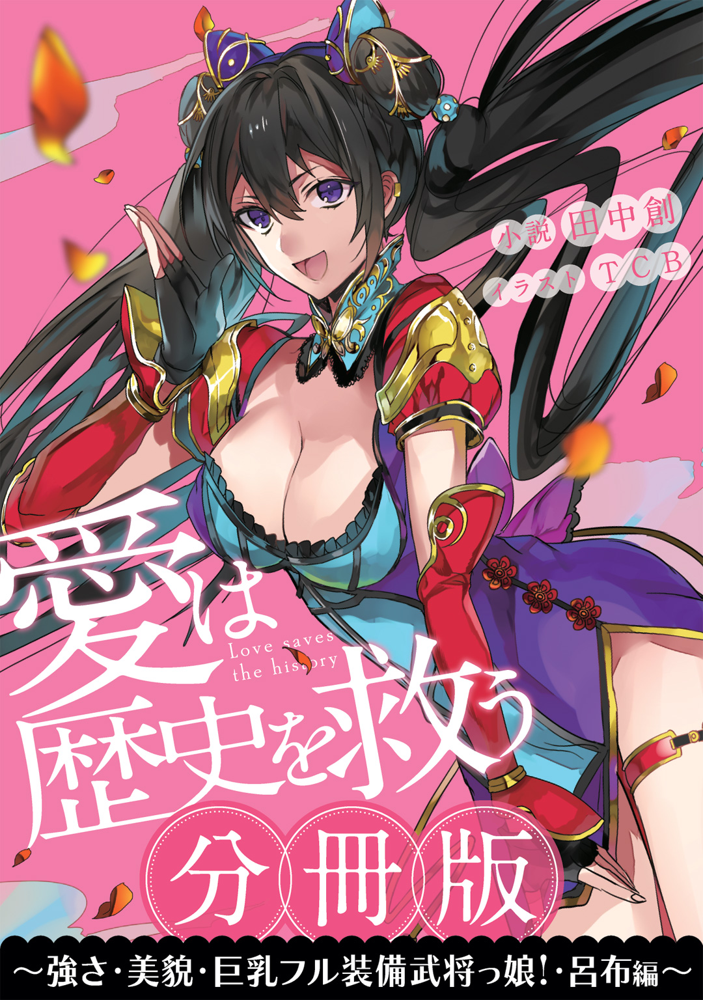
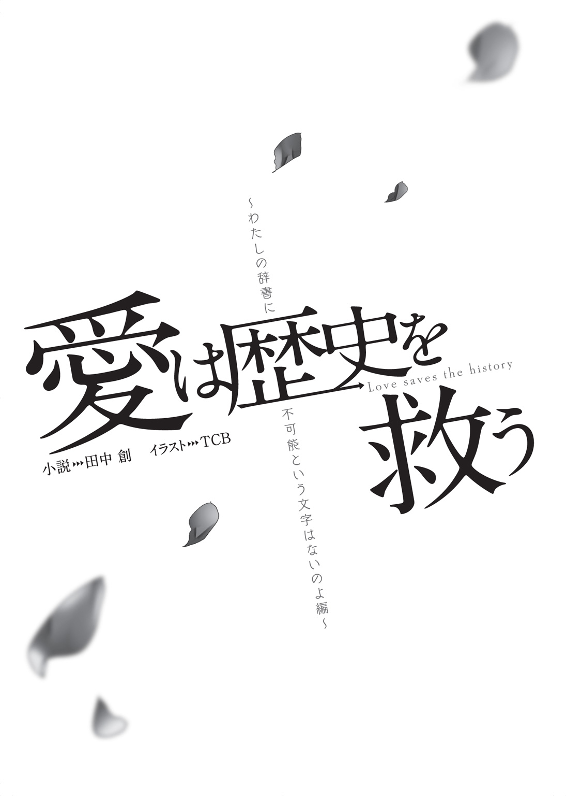
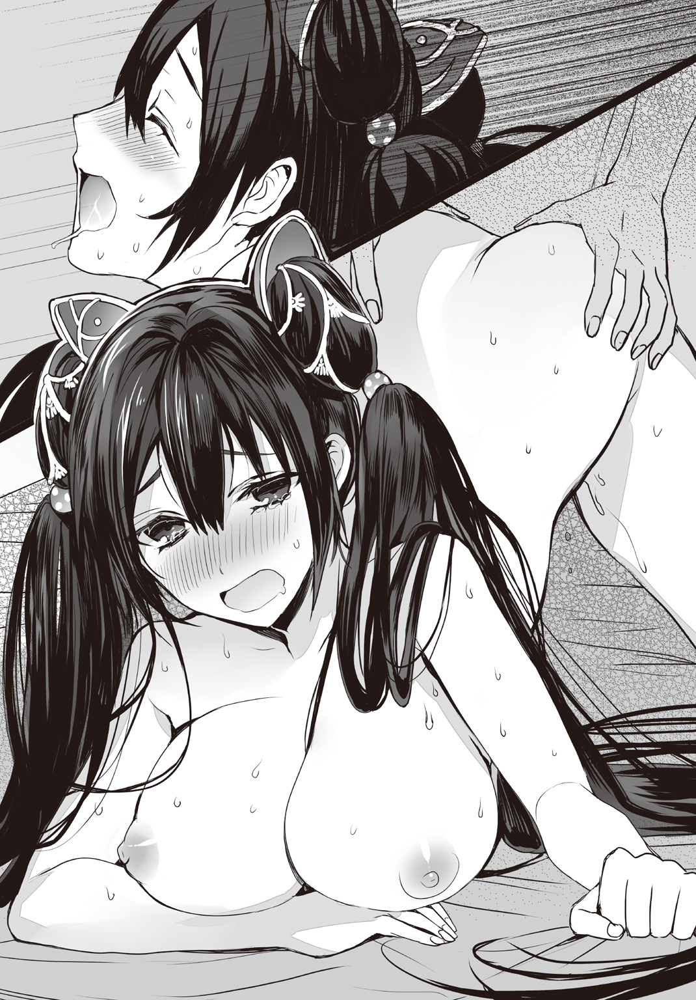

| ［分冊版］愛は歴史を救う～強さ・美貌・巨乳フル装備武将っ娘！・呂布編～ | |
| 田中創 | |

この本は縦書きでレイアウトされています。
また、ご覧になる機種により、表示の差が認められることがあります。



時震って言葉を知ってるか？
まあ、実はあたしもよくわかってねえんだけどな。
聞いた話じゃ、「歴史上のヒトやモノを変異させ、並行歴史を生み出す謎現象」......ってことらしい。現代の技術でも、原因不明なんだってよ。
んで、その並行歴史だかが増えると、宇宙が崩壊しちまうらしいぜ。ぶっちゃけ想像もつかねーけど......それを防ぐために、誰かがなんとかしなきゃなんねえわけだ。
そう。つまり、それを行うのがあたしたちＴＨＲ――航時局歴史管理課ってことだな。
時空を超えて、過去の世界に赴き、変異した歴史を修正する。一応、それがあたしらの仕事になってる。
まあ個人的にゃ、強い奴と闘えりゃあそれでいいんだけどな。せっかくの時空移動なんだから、歴史上の猛者どもと闘わなきゃソンだろ？
ちなみに、ＴＨＲにいる連中も、時空を超えて集まってきた偉人ばかりだぜ。
ある意味で怪物級のカリスマの持ち主。皇帝ナポレオンこと、ナポ子。
知識と毒舌じゃ右に出るものはいねえチビッ子。哲学者アリストテレスこと、アリス。
とんでもねえ機械を作っちまう恋愛脳。発明王エジソンこと、アル。
三人とも、時震の影響を受けた偉人少女らしいな。あたしみたいに。
で、そんなあたしたちをまとめてるのが隊長さん――御戸ミツキだ。
基本は情けねえし、腕っぷしも大したことねえ軟弱男なんだが......まあ、見どころがないわけじゃねえ。なんだかんだでみんなにも慕われてるみたいだもんな。
任務のたびに現地の女の子と仲良くなっちまうのは隊長さんの悪い癖っつーかなんつーか。まあ英雄色を好むとも言うし、あたしは別にいいと思ってるけど。
そんな隊長さんが、果たして時震の謎を解き明かすことが出来るのか。
隊長さんの想いは、上司、フレドリカ姐さんへと伝わるのか。
......後者については、まず無理だと思うけどな。
まあともかく、だ。
これは、あたし――呂布奉先が、そんな隊長さんと初めて出会ったときの話だぜ。
舞台は、千八百年前の中国。群雄割拠の時代だな。
アリスとの馴れ初めは、八巻に語った通りだ。
その後、僕はめでたく航時局歴史管理課――ＴＨＲの正エージェントとなり、フレドリカさんから実務隊長の任を引き継ぐこととなった。
ただの公務員に過ぎないＴＨＲのリーダーが、なぜ「隊長」と呼ばれているのか。
常々疑問だったのだが、エージェントになってすぐにその理由はわかった。それは、任務があまりに過酷だからである。
時空修正のために命がけの状況に放りこまれることはザラだし、現地では相当に柔軟な対応が要求される。おまけに時空酔いは毎回ひどいし、取り立てて給料がいいわけでもないしで、数日で辞めてしまうひとも多いんだとか。
なのでＴＨＲは、航時局内で「下手な軍隊よりも過酷だ」とか「むしろ決死隊だろ」とか揶揄されてしまっているのである。だからこそ、そのリーダーも「隊長」というわけだ。
それにしても......そんなストレスフルな修正任務のみならず、課長としてのデスクワークをも並行してこなしていたフレドリカさんって、やっぱりすごい。ただ美人で優しいだけのお姉さんではないのだ。
僕もこの当時、彼女の期待に応えるべく、隊長として必死に努力することを決意し始めていた。
あっちこっちの時代に飛ばされる毎日を送り、任務にもようやく慣れてきた――。そう思えるようになったのが、「入隊」一か月目くらいだろうか。
僕があの武将娘と初めて出会ったのも、ちょうどその頃だった。
１９１ ２21 中国河南省 虎牢関
２21 中国河南省 虎牢関
雄々しい叫びと武器が打ち合う金属音が、荒野に響きわたる。
時は西暦一九一年。河南省鄭州市西北部において、要塞〝虎牢関〟を巡っての激しい攻防戦が行われていた。
要塞を攻めるのは、五千にも及ぶ討伐軍。
対して要塞を守るのは、たった五百の騎馬隊である。
「お、怯えるな!! 頭数はこっちが多いんだ!!」
「数で囲めばなんとか......うわあああああっ!!」
「ひと振りで百人がやられただと!? なんだあの化け物武将は!?」
数で勝るはずの討伐軍は、たったひとりの武将さえ討ち取ることが出来なかった。むしろ明らかな劣勢を強いられてしまっている。
そうなのだ。いま僕の目に映っているのは、地面に倒れて呻く討伐軍兵士たちの姿だ。
まさに死屍累々。この惨状のほとんど全てが、ひとりの少女の手によって引き起こされたなんて、いったい誰が信じるだろう。
「どうしたテメェ。それでおしまいか」
少女の冷酷な眼差しが、馬上から僕を見下ろしていた。
ふたつに結った長い黒髪。武具の隙間から覗く魅惑的な白い生足。スリムな体軀に不釣り合いなふたつの膨らみは、こぼれそうなほど大きい。
歳は僕と同じくらいだろう。血風吹きすさぶ戦場なんかには到底似つかわしくない、とびきりセクシーで魅力的な美少女だった。
特に目を惹くのは、彼女が身に纏う服装だ。妙に挑発的なデザインで、谷間も鎖骨も太ももも、全て惜しげもなく晒されている。有り体に申しまして超エロいです。
ただまあ......手にした巨大な戟だけが、ちょっと怖すぎるんだけど。
「ひと思いに真っ二つにしてやる。呪うなら、テメェの弱さを呪うんだな」
少女が僕の顔面に、その戟の先端を突きつける。
「ひっ......!?」
僕は尻餅をついたまま、微動だに出来なかった。下手をすれば、ひと息のうちに僕の身体は左右に分割されてしまうだろう。絶体絶命の大ピンチだ。
戦々恐々としながら少女を見上げ、僕はなんとか交渉を試みる。
「ちょ、ちょっとタイム!! あ、あのね、僕はキミと戦争しに来たわけじゃないんだよ？ その、まずは落ち着いて話し合いを――」
「問答無用っ!!」
少女が戟を思いきり高く振りかぶった。
風を切り裂く鋭い刃が、僕の脳天めがけて振り下ろされる――!!
僕は咄嗟に、準備してきた護身用具で刃を受け止めようとしたのだが、
「げ」
握っていたそれは、少女の戟によってあっけなく一刀両断されてしまった。それはもう、小枝のごとくにあっさりスパンと。
このスタンロッド、特注のタングステン合金製だとかで、チェーンソーでも簡単には切断できないという触れこみだったはずなのに......まさか二世紀の鉄の刃に断ち切られてしまうとは思わなかった。
どういう馬鹿力してんの、この子。
「そんな棒っきれで、この方天画戟を受け止められると思ってんのか。あたしと闘るつもりなら、もっとマシな得物を持ってこいよ」
そんなこと言われても、武器っぽいものはこれしか支給されていないんだからしょうがない（ＴＨＲは殺傷用の武器の携行は認められていないのだ）。
まあたとえマシンガンやロケット砲があったところで、この化け物じみた偉人には通用しない気がするけれども。
「と、とにかく落ち着いて!! 僕はキミの敵じゃないから!!」
それだけ叫び、僕は地面を蹴って走り出した。
唯一の護身用装備すら失った僕に出来ることは、とにかくこの危険な少女から距離を取ることだけである。三十六計、逃げるにしかず。
「待て!! テメェも武人のはしくれなら、逃げないで戦え!!」
「だから武人じゃないってば!!」
そんなこちらの弁解は、この黒髪少女の耳にはまったく届かないようだった。
「戦場で言い訳をするんじゃあねえっ!!」
突き出された戟の先端が、僕のわき腹をかすめて地面に突き刺さる。
ばきん、と響く、鈍い破砕音。驚くべきことに、その一撃だけで岩肌が粉砕し、直径一メートルほどのクレーターが誕生してしまっていた。
「うそーん......」
まるで建設重機並みの破壊力。さすがアリスの言う通り、〝武力〟の偉人というだけのことはある。
戟の一撃がこの崩壊した地面でなく、僕の身体に当たっていたらと思うと......全然笑えない。こんなのをまともに食らったら、命がいくつあっても足りないではないか。
少女の鋭い眼光が、僕を射竦める。
「おい腰抜け。ぺちゃんこにつぶされるのと真っ二つに斬られるの、どっちがいい？」
「最悪の二択!?」
少女の声色から、それが冗談でないことは容易にわかった。
なにせこの時代の中国は、情け容赦のない大乱世なのだ。そのうえこの目の前の少女は、その乱世の中で当代最強との名声をほしいままにしている、血も涙もない武将娘だったりするのだから。
「選べないなら、あたしが選んでやる。後悔しねえようにな」
少女の声には、修羅場をくぐってきた者特有の凄みがあった。実際に何人もの敵を、その凶悪な戟で屠ってきたに違いない。
このままでは間違いなく、ミツキくんのか弱いボディは「ぺちゃんこ」か「真っ二つ」のどちらかの運命を辿ってしまうことだろう。数秒以内に。
こうなればもう、最後の手段を使うしかない......!!
「うう......す、すいません、ホント勘弁してください......!!」
僕は咄嗟に地面に両手両膝をつき、深々と頭を下げた。
「ああ？」
「ど、どうしてもここで死ぬわけにはいかないんです!! 僕の帰りを待っているひとがいるんです......!! どうか許してください!! 靴でも足の裏でもなんでも舐めますから!!」
誠心誠意の土下座――!!
御戸ミツキの生存本能は、誇りもプライドも何もかも捨てることを選択したのだ。
「ぼ、僕なんて殺しても何の意味もありませんよ？ 仲間からはゴミだ屑だと言われるだけのしょうがない男ですしね。ヘタレですしね」
「ヘタレだと」
「ええもう、せいぜい謝罪くらいしか能のないチンケな存在ですから。あなたほどの人物を敵に回すなんて、そんな大それたことするはずないじゃないですか」
このジャパニーズ最終手段が、果たして古代中国の武将相手に通じるのか。それはひとつの賭けだった。しかし、僕が愛するフレドリカさんと生きて再会するためには、もはやこの方法しか考えられなかったのである。
情けなく頭を下げる僕を、少女が汚物を見るような目で見下ろした。
「......ふん、確かにテメェは敵じゃねえな」
ん？ これは好感触？
「そ、それじゃ、許してくれるってことですか？」
「違う。興醒めだって言ってんだ。虫けらを殺したところで何の意味もねえ」
退屈そうに僕から視線を逸らし、少女は手綱を引く。
彼女を乗せた赤毛の馬が「ひひん」と身を震わせ、僕の前から踵を返した。
「あたしが戦いたいのは強えやつだけだ。テメェみたいな雑兵の首に興味はねえよ」
「ぞ、雑兵ですか......」
反論できないけど。
「テメェらの大将に伝えておけ。義妹たちを取り返したいなら、この呂布奉先と一騎打ちが出来るくらいの猛者を連れてこいってな」
そう言い捨て、少女――呂布は僕の前から遠ざかっていく。
土下座が功を奏したのだろうか。彼女は、付近で戦っている騎馬兵たちに帰還命令を下し始めた。
「退くぞテメェら!! 挨拶はもうこのくらいで十分だ!!」
周囲から「うおおお!!」と野太い鬨の声が上がる。
呂布配下の五百の兵隊たちは、少数ながらいずれも鍛え上げられた精鋭ばかりだった。端的に言えばみなさん、めちゃめちゃ体育会系なのである。超強そう。
すっかり戦勝気分の兵たちを引き連れ、呂布はそのまま要塞の中へ戻っていく。
門の前に残されたのは、壊滅状態の討伐軍と、土下座スタイルの僕だけだった。
「た、助かったみたいだ......。よかった......」
心からの安堵のため息が漏れる。少しチビってしまっていたのは内緒だ。
放心状態のまま、ぼんやり巨大な門を見守っていると、
「全然よくないですよ」
背後から冷たい声がかけられる。
「女の子に土下座してまで命乞い。よくもまあそんな情けないことが出来ますね。ああいう場面、男なら潔く戦って散るべきでしょう」
銀髪の小娘――アリスが僕を思いきり見下していた。
「いや、散るのはさすがに......ねえ？」
「ねえ、じゃないです。恥ずかしい真似するくらいなら死ねって言ってるんです」
アリスの毒舌が、今日もまた僕のハートを抉る。
彼女は古代ギリシャからやってきた哲学者で、数週間前から同僚として一緒に働いているＴＨＲエージェントである。
本来は本部勤務のオペレーターなのだが、人手不足のためにこうして現場に駆り出されることがままあるのだ。フレドリカさんは課長業務が忙しそうだし、プラトンさんは学園に帰っちゃうしで、実働部隊が僕と彼女しかいないのである。
ともあれ、こうやっていくつかの時震トラブル解決に共に赴くことで、僕たちの間には同僚という枠を超えた、ほのかな絆のようなものが芽生え始めていた――
はずもなく。
相変わらず僕に対するアリスの罵詈雑言は、ただただ辛辣なものだった。
「御戸さんが『人質解放交渉は任せてくれ』なんて言うから任せてやったのに......なんですかあの体たらくは。ゴキブリよろしくただ逃げ回ってただけじゃないですか」
「でも、逃げないと殺されそうだったし......」
「人質の命がかかってるのに、自分の心配とはお偉い立場ですね。あなたみたいな恥さらしを、課長が好意的に評価すると思いますか」
「い、いいえ、返す言葉もございません......!!」
ひとりでクールに事態を解決すれば、きっとフレドリカさんが僕を褒めてくださる――。そう思っての単独説得工作だったのだが、その目論見はまったく甘かったようだ。
なにせあの呂布という武将娘、こちらの話をまるで聞きやしないのである。
アリスの小言はくどくどと続く。
「腕っ節は弱い。頭も悪い。おまけにルックスもパッとしない。あなたみたいなのを隊長として尊わなきゃならないなんて最悪です。なんかの罰ゲームですかこれ」
うう、泣きそう......。
フレドリカさんから引き継いだばかりの新米隊長だけど、僕だって頑張ってるのになあ。こんな戦場じゃ土下座くらいしか能がないけど、精一杯やってるのになあ......。
僕が毒舌幼女に向けて本日二度目の土下座をキメようとしていると、
「まあまあアリスちゃん、そのへんで許してあげっぺよー」
横合いから呑気な声がかけられた。
ゆったりした陣羽織を身につけた、サイド三つ編みの女の子だ。
身長はアリスよりもちょい高めくらい。コスプレが趣味の田舎の中学生と言っても通るだろう。腰に差した物々しい剣が、その小柄な体型にはまったく似合っていない。
なんだかしまりのない顔で、にへら、と笑っているこの少女こそ、なんとこの討伐軍を仕切っている大将――劉備玄徳さんなのである。
「あの呂布って女、どう見だってバケモンだべ。地面だの岩だの平気で割っちまうしよ。普通の人間じゃまんず太刀打ち出来ねえべよ？」
「それはそうですが」アリスが眉根を寄せる。
「ミツキくんもミツキくんなりに精一杯頑張ってくれたべ？ こごはねぎらってやんのが女の優しさってやつだべよ」
「でも劉備さん。あの虎牢関の中に捕らわれているのは、あなたの義妹たちなんですよ？」
アリスの言葉に、劉備さんは「あー」と後ろ頭を搔きながら、
「関羽と張飛なあ......。そりゃまあ、確かにマズイとは思っとるけど」
本当にマズイと思っているのかどうか、劉備さんはうんうん頷きながら笑みを浮かべているだけだった。器が大きいのか、ただぼんやりした性格をしているだけなのか、判断に困る大将様である。
「先ほどもご説明した通り、私たちは、そのふたりを救出するために派遣されてきたんです」
「ティーエイチアール......だっけ？ よっくわかんねえけど、ご苦労様だべな」
「それが我々の仕事ですからね」アリスが淡々と続ける。「任務達成こそが最大の目標なんです。屑がちょっと頑張ったところで、成果が出ないんじゃ意味ありませんよ」
「......はいはい、すいませんでしたね。人質も助けられないような屑で」
ため息をつきながら、ゆっくりと立ち上がる。
そう。今回の任務は、『呂布に捕らわれた人質二名を救出すること』だった。
しかしこれがまた、難易度ベリーハードなミッションなのである。だって呂布奉先といえば、「三国志」でも最強クラスの武将なんだから。
あらゆる武器を使いこなした豪傑で、群雄割拠の世にその名を轟かせた偉人。現代日本でも、しょっちゅうゲームやマンガの題材になっているくらいに超有名な英雄だ。歴史に疎い僕だって、その名前くらいは知っている。
特にこの〝虎牢関の戦い〟では、呂布の活躍はめざましいものだったらしい。なんでも劉備さんたち三兄弟を相手に、一歩も退かぬ「空前絶後」の激闘を演じたとか。
そんなのとガチバトルしなきゃならないって......ちょっと気が遠くなる。
「本来の時間軸であれば、呂布奉先はこの戦いで虎牢関を放棄して撤退するはずでした。劉備さんたちの勝利に終わるはずだったのです」
そう言いながら、アリスが戦場を睥睨する。
荒野に倒れ伏しているのは、いずれも劉備さん配下の討伐軍の兵隊たちだった。
武将ひとりに五千人の軍を壊滅させられちゃったというこの惨状――勝利どころか、大敗北もいいところである。
「時震の影響でしょうね。あの武将、常識では考えられないほどの超人的な戦闘能力――〝武力〟を得てしまったようです。そのおかげで、歴史変異率は現在四十パーセント付近です。どんどん並行歴史が生まれつつあるのですよ」
「並行歴史なあ......。あたしにゃ、そのへんの小難しい話はよくわがんねえけども」
劉備さんが困ったような笑みを浮かべた。
「関羽と張飛――うちの義妹たちも、かなり強いはずだったっぺよ？ それがあっさり捕まったっちゅうのは、相当ヤバイことだっぺ」
関羽さんと張飛さんというのもまた、三国志では有名な豪傑だ。
にもかかわらず、この時間軸においては呂布に一太刀も浴びせることすら出来ずに囚われの身となってしまっているらしい。
ただでさえ最強と謳われている呂布奉先が、時震によって更なる戦闘力を獲得してしまった。そのせいで、この時代のライバルたちでも手がつけられない存在になっている......と。
今回の事象変異は、つまりそういうことなのだ。
劉備さんが「なんだかなあ」とため息をつく。
「あんだけ強いのに、なんで人質なんて取ったんだべね。あたしの首を狙うだけなら、普通に攻めるだけで勝てっぺよ」
「さあ、それは私にもわかりません」アリスが肩を竦める。「ですがこのままでは、劉備さんや義妹さんたちの命は、間違いなく危機に晒されてしまいます。それは確かですね」
「んだなあ......。なんとか解決策を見つけねえとなあ」
頭を抱える劉備さん。
「んでも義妹たちがいねえと、あたしてんでダメだかんなぁ......。作戦もなんも、まったく思いつかねえ。ああ、ホントどうすっぺ......」
妙に弱気で頼りない大将さんだった。のんびりしているというか、ぼんやりしているというか......。会話をしていてちょっと不安になるレベルである。
やはり劉備さん本人がおっしゃる通り、よっぽど義妹さんたちのサポートが優秀だったということなのかもしれない。
劉備さんが、深いため息をつく。
「こうなったら呂布の要求通り、あたしが一騎打ちするしかないんだべか」
「それはダメです」僕はすかさず首を振る。「そんなことしたら劉備さん死んじゃいます。要救助者を見殺しになんて出来ません」
僕がＴＨＲエージェントである以上、そんな選択肢は絶対にとれない。
劉備さんたちを助けられなかったら、歴史はさらに歪んでしまうだろう。そしたら宇宙がヤバイし、フレドリカさんに愛想尽かされてしまう。いろいろな意味で僕は破滅だ。
「義妹さんたちは僕がなんとかしますから。劉備さんは安心して待っててください」
「そう言ってくれる気持ちは嬉しいだよ」劉備さんがにこりと笑う。「んでも、このまま要塞攻めしても、勝てる見こみはまったくねえべ？」
確かに彼女の言う通りかもしれない。
虎牢関の門は堅く閉ざされ、劉備さんの配下の兵隊はみな満身創痍の状態だ。このまま真っ向から戦いを仕掛けても、人質を解放するのはまず無理だろう。
「やっぱりここは、あたしが犠牲になるしかねえべ。これでもいちおう義妹たちとは、『死ぬときは一緒だ』って約束してっからな」
「ああ、そうなんでしたっけ」
僕のうろ覚えな三国志知識によれば、劉備さんたち三兄弟の絆は強固なものらしい。互いの信頼によって数多の死線を潜り抜け、いずれひとつの国を興すまでになるはずなのだ。
命がけでお互いを助けたいという覚悟は当然のことだろう。気持ちはわかる。
「ふむ......義妹さんたちを思いやる心、実にお美しい」アリスが興味深げに頷いた。「想いを寄せ合う女の子同士が、身を挺して互いを助け合う......。いいですよねえ。同性同士の一線を越えた友情って」
現代で知識収集を始めたこの哲学娘の嗜好は、最近変な方向に歪みつつあった。
哲学者としての性なのか、もって生まれた変人気質のせいなのか、妙にマニアックな方面の知識に惹かれているようなのである。
「劉備さんたちの百合園の誓い......守らねばなりません」
「あれ？ 百合じゃなくて桃――」
「細かいことはいいんです。花咲き乱れる庭園で姉妹の誓いを立てれば、それは立派な百合なんです。マリア様だってきっとそう言うに決まってます」
マリア様ってなんだ。
「ともかくですね」アリスが鼻を鳴らした。「御戸さんごとき土下座野郎に事態の解決を任せておくわけにはいきません。美少女同士のキャッキャウフフを愛する者として、ここは私がなんとかしましょう」
「なんとかって？」
「とっておきの手があるんです。私なら、確実に義妹さんたちを奪還できます」
そういうアリスの顔は、心なしか得意げである。
「んん？ アリスちゃん、なんかいいアイディア思いついたんだべか？」
「ええ。なんたって私、〝博識〟ですから。古今東西の軍略にも精通しちゃってますから」
「それは頼もしいべ!!」劉備さんも顔を輝かせる。
「こう見えて〝ギリシャの諸葛亮〟と呼ばれた女ですからね、私」
「絶対ウソだ......」
呆れる僕をよそに、アリスは自らの計画を劉備さんに語り始めた。
三国志最強の武力ＶＳ．西洋最大の博識。いったいどんな結果になるのか、まるで想像もつかない対戦カードである。
でもまあとりあえず、ここはこの哲学娘の手に委ねるしかないのだろう。
他に手段もないことだし。
１９１２21 虎牢関 門前
「......で、これがその軍略の結果だと？」
疑問を呈する僕に、アリスは表情を変えず「はい」と頷いた。
「これこそ私の英知が導き出した、最良の策ですね」
「いや、ちょっと待って。まず説明してくれない？ なんで僕、縛られてるの？」
そう。なぜか僕は今、虎牢関の真ん前で磔にされてしまっていた。
地面に突き立てられた木材に荒縄で両手両足を固定され、身動きがまったく取れないような状態にされているのだ。
「もしかしてこれ、ムチとローソク持った女王様的なひとが来ちゃう感じ？」
「なんですかその気持ち悪い発想は」アリスが眉をひそめる。「残念ながら違います。そういう変態プレイは行きつけのお店でどうぞ」
「いやあの、僕がそういうお店の常連みたいな言い方やめてくれない？」
まあ、興味がなくはないけれども。
「ドＭの御戸さんには物足りないかもしれませんが......ムチとローソクの代わりに、これを差し上げましょう」
そう言ってアリスが僕の頭の上に置いたのは、
「......なにこれ？」
真っ赤に熟れた、美味しそうな林檎だった。
「だから、なんでリンゴ？」
「さあ、なんででしょうね」
アリスが首を傾げた。まるでひとを小馬鹿にするようなトボけ方である。
......おかしい。これは絶対におかしい。身体を拘束され、頭の上に意味ありげに林檎を置かれるなんて――。なんだかもう、悪い予感しかしない。
「......ふん。なかなか面白そうな勝負になりそうだ」
僕のすぐ脇で口元を歪めているのは、敵の首領――呂布奉先そのひとだった。
敵将である彼女がなぜ、こんな場所にいるのか。
その経緯は単純明快だ。呂布の「猛者を連れてこい」という発言に、アリスが乗ったのである。なにやらこれから、ふたりは一騎打ちを始めるつもりらしい。
アリスみたいなヒキコモリ娘が、三国志最強の武将に腕っぷしで勝てるのか。それ以前に、僕はどうしてふたりの脇で拘束されているのか。
なにもかもが謎だらけである。
手にした長弓の弦を弄びながら、当の呂布は獲物を見るような目で僕を見つめる。
「こういうわかりやすいのは大好きだぜ。要は、この的を狙えばいいんだろ？」
......あれ？ 今、的って言った？ この子僕のこと、的って言った？
内心ビビりまくりの僕をよそに、呂布が続けた。
「でも、このあたしに弓で勝負を挑もうなんて、ずいぶん強気じゃねえか。あたしの弓の腕前を知らねえのか？」
「いいえ、よく知ってますよ」〝博識〟のアリスが答える。「宴会の席で勝負をしたんでしょう？ 遠く離れた戟の先端を射抜くという離れ業を披露して、その場の将軍たちに自分の要求を通させたとか」
「へえ。よく知ってるな。ちびっ子」
呂布に感心したような目を向けられ、哲学娘は満更でもない様子だった。
「呂布さんの類まれな武芸の腕が『天の威光を具えたかのようだ』と評価されていることも把握済みです。どんな武器を使わせても達人の域に達しているらしいですね」
「はっ、達人ね」
そう呼ばれることに慣れているのだろう。呂布はさほど表情を変えずに続ける。
「それを知ってるなら、なんでわざわざあたしに勝負をふっかけてきたんだ？」
「あなたの流儀で、こちらの要求を通すためですよ」アリスが口の端を吊り上げた。「私がこの勝負で勝ったら、人質のおふたりは即座に解放していただきます。天の威光を具えた将軍様が、まさか勝負から逃げるはずはありませんよね？」
「そりゃ当然だ。あたしは強えヤツと闘うのが大好きだからな」
呂布の瞳がとたんに愉悦の色を帯びた。
なにこの子、どこの戦闘民族？
「でも、あたしの相手がテメェみてえなおチビちゃんに務まるのか？ 弓の名手どころか、ただのガキ......とても武器なんか扱えそうに見えねえけど」
「見た目にギャップがあるのはお互い様でしょう」
見下されても、アリスは一切動じない。いつものように涼し気な表情で、淡々と続ける。
「それを言うなら、あなただって古代中国の武将には見えませんよ。むしろギャルゲーのヒロインです。しかもどっちかっていうと、バトルヒロイン凌辱系の」
「バトル......なに？」
「巨乳でチャイナの黒髪ツインテールとか、あざとく狙いすぎじゃないですか？ しかもそんな肌色率激高なエロ衣装で戦場を駆けまわるなんて、ハレンチもいいところですよ。悪の組織にチョメチョメされたがってるとしか思えません」
「あん？ チョメチョメってなんだ？」
怪訝な表情を浮かべる呂布に、アリスが「それはですね」と耳打ちする。
「あなたを拘束して......とか......しちゃったり、......複数人がかりで......とか」
「はあ!?」呂布の目が驚きに見開かれた。
「あるいは触手を.........こう、強引な感じで......口にも後ろにも......」
呂布の顔色が、どんどん赤くなっていく様子が窺える。アリスは何を吹きこんでいるのだろう。ここからでは何を話しているのかよく聞き取れないが、男子としてはすごく気になる。
三国志最強の武将ですら、狼狽を見せてしまっているくらいだし。
「ち、ちびっ子のくせに、えげつねえこと考えやがるぜ......」
「ともかく、私を見た目で判断しない方がいいということですよ」
アリスの言動はいつになく挑発的である。
「なにせこの頭の中には、人類が培ってきた数千年分の射芸の知識がありますから。こんな的に矢を命中させることくらい、わけありませんよ」
アリスが横目でちらりとこちらに目を向けた。
やっぱりだ。間違いない。
この子ら、僕を的にして弓の腕前を競おうとしている......!?
「異議あり!!」咄嗟に声を張り上げた。「なんで生きてる人間をターゲットにしちゃうの!? 僕の人権はどこ行ったの!?」
「それの何がおかしいんだよ」呂布が平然と口元を緩める。「弓は殺しの道具だぜ。標的が生きてる方が面白いに決まってるじゃねえか」
「そうですね。屑野郎を狙った方が本気出せますし」
「いやいや待ってふたりとも!! 考え直そう!? その発想は文化的じゃないよ!!」
「そうか？ 別に普通だろ？」
まるで殺し合いが日常茶飯事であるかのような言い草に、思わず身震いしてしまう。
やはりこの子は、血も涙もない武将なのだ。僕のように無力な人間なんて、虫けら同然にしか思っていないのだろう。
ああ、僕の残り寿命はあと何分？
文字通り手も足も出ないというこの状況、残された手段は口八丁による説得だけだった。
「だ、だいたいキミら女の子でしょ？ 勝負だったらほら、お料理とかダンスとか、もっと平和的で可愛らしいのがいろいろ――」
「うるせえ。的は黙ってろ」
「そうです。黙っててください」
うわお。無駄に息ピッタリ。
彼女たちの謎のユニゾンに、僕は絶句するしかなかった。
「それなら」と呂布。「頭の上の林檎だけじゃなくて、全身に点数つけて判定した方が面白いんじゃねえか？ 三射して、合計の高い方が勝ちってのはどうだ」
呂布の提案に「なるほど」とアリスが頷く。
「手足は一〇点。胴体が二〇点。頭や心臓への直撃でワンショットキル決めた場合は、一〇〇点って感じですかね。林檎を射抜いたら、五〇点プラスもう一射ボーナス付与する感じで」
「よし。俄然面白くなってきたな」
「全然面白くないよ!?」
こんな残酷な勝負方法聞いたことない。偉人少女というのは、どいつもこいつも僕をゴミ同然に扱うのがデフォだとでもいうのか。
「こ、こんなのあんまりだ!! 助けてえ!! 誰か助けててええええっ!!」
そんな僕の悲痛な叫びも、人でなしどもの心には届くはずもなく。
ふたりはくるりとこちらに背を向けて、さっさと歩き出してしまった。
「近すぎても遠すぎても面白くありませんし......だいたい五十メートルくらいの距離から勝負をしてみましょうか」
「望むところだ」
頃合いのところまで歩いて、ふたりは早速勝負の準備を始めてしまう。
地面に線を引いたり、討伐軍の兵士さんたちから矢の束を受け取ったり。恐ろしいことに、ふたりともやる気満々のようである。
着々と進んでいく勝負の準備を、ただ見守ることしかできない僕――。極刑を待つ囚人というのは、きっとこういう気持ちなんだろう。知りたくもなかった心境である。
「うう......あんまりだ......!!」
そもそもどうして僕は、味方のはずのアリスにこんな目に遭わせられているのだろう。いったい僕が何をしたというのだろう。
さすがに前回のお話のヒロインに裏切られるなんて、予想出来ないよねえ......。
「では、まずは私の番ですね」
アリスが先に準備を終えたようだ。一歩前に進み出て、大きな長弓を構える。
さすがにそのロリ体型で本格的な戦闘用の弓を扱うのは大変そうに思えるが......しかし、その表情は真剣そのもの。妙に殺気立った様子で、僕をじっと睨みつけている。
「あ、あのー。アリスさん......？ まさか本気で射るつもりじゃないですよね？」
「............」返事はない。
「もしもーし？ 聞こえてます？」
「............」やっぱり返事はない。
「な、なにか言ってよ!? いくら僕の土下座外交が気に入らなかったからって、殺すってのはいくらなんでも――」
「黙れ屑。気が散ります」
怒気を帯びたアリスの声に、僕は「ひっ」と押し黙る。
普段の飄々とした性格からは考えられないほど、彼女は全力で集中しているようだった。それだけで、口を開いてはいけないようなプレッシャーを感じてしまう。
「西南西の風、風速五メートル......射角を水平方向からプラス十度......弓材のしなり具合から考えて、この角度で弾性エネルギーを加えれば......!!」
構えながらなにやらブツブツ呟くアリス。頭の中の弓の知識を総動員しているらしい。
こ、これも何かの策略なんだよね？ そう信じていいんだよね？
「よし、これなら一〇〇点、狙えますね......!!」
だめだこの子!! 初っ端からワンショットキル狙う気だ!!
「ちょ、待っ、やめ――」
という僕の叫びは、すでに遅かった。それより一瞬早く、アリスの細い指が矢尻を手放してしまっていたからである。
「ひいいいいいいっ!?」
高速で飛来する矢を目にして、僕は情けなく悲鳴を上げることしか出来なかった。
さすがの博識の賜物なのか、アリスの矢は誤ることなくまっすぐに僕の脳天を目指して飛んでくる。失速の気配はない。一瞬のちには深々と脳髄を抉っているに違いないだろう。
脳裏に浮かぶのは、やはりフレドリカさんの笑顔だ。小さなチャペルで彼女と幸せな式を挙げるという僕の夢は、結局ここで儚く散ってしまうのか。
――ああごめんなさいフレドリカさん、先立つ不幸をお許しくださいっ......!!
心中で愛するひとへの別れの言葉を唱えていた僕の耳に、「ぶすり」と残酷な音が響いた。全身の血が思わず凍りつく。
しかし、矢が突き刺さったのは僕の身体ではなかったようで。
「......あれ？」
頭の上に載っていた林檎が、ごろんと地面に落下した。見ればその林檎は、ど真ん中を矢で綺麗に射抜かれているようだ。
「ち、外しましたか」アリスが露骨に顔をしかめる。「ホントはヘッドショット狙いだったんですけど。微妙に手元がブレたんでしょうか」
ああ、これ、本気で僕を殺す気だった顔だ......。
じわり、と全身からいやな汗が滲む。もう数センチ下にずれてたら、ミツキくんの頭蓋骨はこの林檎のように貫かれていたことは間違いないだろう。
「意外にやるじゃねえか、ちびっ子」呂布が不敵に笑う。「手堅く一射ゲットってとこか。小さいのに、いい腕してやがる」
「いえいえ。私などまだまだです。反省が必要かもしれませんね」
「そうだね!! 確かにキミには反省が必要だね!! 道徳的な意味で!!」
叫ぶ僕にはお構いなしに、呂布はにいっと唇の端を歪めていた。
「ま。こういうのは、いきなりぶっ殺したんじゃ面白くもなんともねえしな。獲物が怯える様をギリギリまで楽しむってのも乙なもんだ」
「ふむ」とアリスも頷き、「確かにそういう楽しみ方もありますね。さすがは天下を震え上がらせた武将だけのことはあります」
「......お、鬼ですねあなた方!!」
僕は悟った。もはやこれ以上の延命はいっさい期待出来ないだろう、と。南無三。
「さて、次はあたしの番だな」
呂布も準備を終えたようだ。彼女は地面に引いた線に片足を合わせ、ゆっくりと矢をつがえ始めた。
的を睨みつけるその視線は、猛禽のごとくに荒々しい。
「あたしはどこを狙おうか......。じわじわと腕あたりからいってみるか」
「や、やめて!? お願いだから考え直して!! 何の罪もない人間を殺すなんて、絶対おかしいよ!?」
「うるせえ。矢の一本や二本刺さったくらいで人間死なねーよ」
「死ぬよ!? 普通に死ぬから!!」
「やかましい野郎だなあ......。テメェみてえなヘタレ、あたしは大嫌いなんだよ。雑魚は雑魚らしく、大人しく的になっとけ」
だめだ。この武将娘さん、僕みたいな常識人とはまるで違う価値観をお持ちでらっしゃる。
人間を殺すことに何らの躊躇も抱いていないのだ。それがはっきりわかった。
さっきみたいな命乞いはもう二度と通用しないだろう。
「よし決めた。一発で頭を射抜いてやる」
「ひいいいっ!?」
にいっと唇を歪め、呂布が弓を引き絞る。
ぴんと伸びた背筋に、ほどよく力の抜けた両肩。弓は微塵も動くことなく、矢は一直線にこちらを向いている。
弓術に疎い僕でもわかるくらい、それはもう綺麗な射の姿勢だった。彼女が放つ矢は、狙い通りの位置に命中してしまうのだろう。まず間違いなく。
一瞬の静寂。ごくりと鳴る喉。きりきりと張りつめていく弓弦。
目に見える死が、もうすぐそこまで迫っている。最大限に引かれた彼女の弦が解き放たれたときが、僕の最期だ。
場の誰もが、この最強武将の射に注目していた。傷ついた兵士のみなさんも、固唾を呑んで勝負の行方を見守っているようだ。
呂布の視線が、僕の眉間をまっすぐに捉えた。
「じゃあな、ヘタレ野郎」
「......やだああああっ!?」
死の恐怖に耐えかね、僕は両目をぎゅっと瞑った。
今度ばかりはもう無理――そう観念したその刹那、
「さあ、今です!!」
アリスの声が響き渡った。
え？ なに？ なんなの――？ あわてて目を見開く。
僕が事態をのみこめないでいると、どこか遠くから「了解だべ!!」と声が聞こえてきた。
「義妹たちを痛めつけた礼、しっかり返してやるだよ!!」
劉備さんだ。弓矢を構えて、呂布の背中に狙いをつけていた。姿が見えないと思ったら、向こうの岩陰に潜んでいたのか。
彼女は即座に手にした弓を引き絞り、「んどりゃあっ!!」と一閃、矢を放つ。
なるほど、この一撃のために、アリスはわざわざ呂布に弓術勝負を持ちかけたのだろう。呂布が射の姿勢に入れば、さすがに無防備になる。その瞬間を狙って、伏兵の劉備さんに合図を送ったのか――!!
見事なまでの連携プレイ。お手本みたいなハイドアタック。
化け物ばりの武力を誇る呂布奉先といえど、さすがにこの不意打ちには対応出来まい。僕はそう思ったのだが、
「......やっぱ、そう来たか」
呂布の表情は、まるで揺らぐことはなかった。
なんと彼女はくるりと踵を返し、劉備さんの射た矢をつかみ取ってしまったのである。
まるで子供の投げたゴムボールをキャッチするかのように、いとも容易く、あっさりと。
「ええっ......!?」
さすがに僕は言葉を失った。なにその超反応。
攻撃を仕掛けた劉備さんも、目をまん丸にして驚いている。
飛んでくる矢を軽々つかむなんて、恐るべき動体視力と反射神経である。
しかしそれ以上に驚きだったのは、その異常なまでの勘のよさだ。完全な死角からの攻撃だったはずなのに、どうしてそれを察知できたのだろう。
アリスも、珍しく狼狽気味に唸っている。
「ま、まさかあなた、背中に目がついているとでもいうんですか......」
呂布は「ふん」と、つまらなそうに鼻を鳴らした。
「テメエらの魂胆なんざ、最初からお見通しだってことだよ」
「どういう意味です」
「雑魚連中ってのは、どいつもこいつもそうだ。口では正々堂々を謳いながら、闇討ちだとか不意打ちだとか、いつもそういうつまらねえ戦法に頼る」
つまらねえと言われたのが癇に障ったのか、アリスが「む」と顔をしかめる。
「それじゃああなたは、後ろから射られるのがわかった上で、あえて私の勝負に乗ったということですか」
「ああ、そうだぜ。いつ不意打ちされてもおかしくないとは思ってた」
武将娘がそっけなく告げる。命を狙われた矢先だというのに、まるで「それがどうした」と言わんばかりの平静さだった。
「なら、どうしてわざわざ」
「何度も言ってるじゃねーか。強いヤツと闘うことがあたしの生き甲斐なんだ。勝負を挑まれりゃあ、受けねえわけにはいかねえだろ」
呂布は「それに」と続ける。
「別に暗殺なんて今回に限った話じゃねえ。あたしを殺して名をあげたいと思ってる連中なんて、この世にごまんといるからな。今更ビビる必要なんてねえだろ」
呂布の表情も口調も、えらくあっさりとしたものである。
今更怖がる必要もないくらい不意打ち慣れしてるって......年頃の女の子として、それどうなんだろう？
アリスもまた、訝しげに眉をひそめている。
「もしかしてあなた、常日頃からずっとそうやって警戒しっぱなしなんですか？」
「ああ。もう慣れたもんだぜ。たとえ後ろから矢を射かけられようが、斬りつけられようが、だいたい反応出来るようになったしな」
そんなことが出来る人間は、世界広しといえどもこの子だけだろう。フィジカル的にも常人離れしているが、それ以上にメンタル的に超然とし過ぎている。
最強の存在ゆえに、常日頃から命を狙われる。数え切れないほど暗殺を仕掛けられてきたおかげで、それを当然のものとして捉えるようになってしまっている――。
誰かに後ろから殺されるかもしれない恐怖の中で日々を生きるというのは、いったいどういう気分なんだろう。僕にはそんなの、絶対耐えられそうにない。だいたいこうして射的の的にされているだけで、泣きそうなくらいに怖いのだし。
彼女がこれまでの人生で味わってきた精神的重圧は、それとは比べようもないほどキツイに違いない。きっと僕みたいな凡人には、想像もつかない領域のはずだ。
「ともかく、あたしにはこんな浅知恵は通用しないってことだぜ」
呂布が握った矢が、その手の中でポキリと折れる。それと同時に、相対する哲学娘の戦意もへし折れてしまったようだ。
アリスが「はあ」と呆れたようなため息をついた。
「大した化け物っぷりですね。いろんな意味で」
「そうでもねえよ」
地面に置かれていた愛用の戟を拾い上げながら、呂布が応える。
「群雄割拠のこの乱世、平気でひとの背中を狙えるような人間だらけなんだ。部下だろうが上官だろうが親兄弟だろうが、いつどこで誰が敵に回ってもおかしくねえ。むしろあたしには、どいつもこいつも化け物だらけに思えるぜ」
周りはみんな敵だらけ。そう呂布は言う。
誰も信頼しない。常に身の危険を感じて生きている。先ほど見せた不意打ちに対する超反応は、そんな彼女の境遇から生まれたものなのだろう。
でも。
でもそれって、どうなんだろう。素直にすごいとは言っちゃいけないような気がする。
「んで」呂布がアリスに向き直り、尋ねる。「どうするんだ。ちびっ子」
「......どうする、とは？」
「不意打ちは失敗しちまったみたいだが、勝負はまだ続けていいのか？ あたしの第一射がまだ途中だったよな」
「ええ!? 続行する流れなの、これ!?」
思わず声を裏返らせてしまう。ミツキくんの死亡フラグ、まだまだ健在だったとは。
再び僕は決死の覚悟を抱いたのだが、
「いいえ、もう結構です」そっけなくアリスが呟いた。「あなたみたいな化け物を相手にしたところで、到底勝てるとは思えませんから」
「そうか？ さっき林檎を射抜いたときは、かなりの腕前に見えたけどな」
「実を言えば、さっきのはむしろ外そうとしたんですけどね。たまたまマグレで当たっちゃっただけで」
ええー......マグレで僕を殺しかけたんですかアリスさん......？
「そもそも私、文化系ですから。ヒキコモリ大好き哲学者ですから。勝負なんて柄じゃないんです。ご期待にそえず大変申し訳ありませんね」
申し訳ないなどとはまるで思っていなさそうな顔で、アリスが肩を竦めた。
「ちっ......なんだよ。つまんねえ」
呂布は手にした長弓を放り投げ、くるりと踵を返してしまう。
「どこ行くんです？」
「決まってんだろ、帰る」
白けた、とでも言わんばかりの態度であった。
そんな呂布の背に向け、「無駄とは思いますが」とアリスが口を開く。
「一応要求します。人質を返してください」
「やだね」呂布は振り向きもせず即答する。「人質を返してほしかったら、あたしを倒してみろ」
もう何度となく聞かされた台詞だった。
呂布を倒す――。そんなこと、本当に人類に可能なのだろうか。
あらゆる意味で人間離れしたこの少女には、何をどうしても太刀打ち出来る気がしなかった。強さの次元が違うというか――日常系ギャグマンガのキャラクターが、バトルマンガのラスボスに挑むようなものである。無謀にもほどがあった。
呂布が「ふん」と鼻を鳴らす。
「別に何人がかりでもいいし、どんな手を使ったって構いやしねえ。出来るもんならやってみな。今日一日くらいなら、人質の命は保証してやる」
圧倒的威圧感。僕たちには、歩き去ろうとする彼女の足を止めることさえ出来なかった。
要塞に向かう途中、呂布は一瞬だけ僕の方を見て、
「命拾いしたな、ヘタレ野郎」
「あ、はい......」
彼女の表情を見て、僕はふと、なぜか複雑な気分にさせられてしまった。
命が助かったのは、確かにまあ嬉しい。
しかしどうして彼女の笑みは、こんなに寂しそうなのだろう。
１９１２21 夜 討伐軍陣営 天幕内
「結論から言えば、あれをなんとかするのはまず不可能でしょう」
虎牢関からほど近くに設営された、軍の本陣――。そのテントの中で腰を下ろし、アリスは苦々しげにそう呟いた。
「自分が強いと思っている人間は普通、どこかで油断をするものです。歴史上の偉人たちの中にも、油断や慢心が原因で足を掬われてしまったケースは多々見られますからね」
「んでも、あの呂布奉先には油断なんて全然ねえ......。それが問題だべな」
劉備さんも深いため息をついていた。
昼間の弓術勝負であっさり不意打ちを見破られてから、およそ半日が経過している。
その間僕たちは、人質奪還のために幾度となく挑戦を続けていたのだ。
『真っ向勝負で無理なら、こっそり潜入して人質を救っちゃえ』――とまあ、そんな感じのコンセプトで。
忍者よろしく要塞の壁を登ってみたり、穴掘って地下から潜入を試みたり。敵兵に化けてみたり女装してみたり、挙句の果てにはダンボール被ってスニーキングしてみたり。
そうやっていろいろ頑張ってはみたのだが......結果はいずれも惨敗だった。
さすが狙われることに慣れているというだけあって、呂布にはこちらの打つ手などお見通しなのだろう。すぐに配下の兵士に見つかってしまうのである。
虎牢関にはもう、蟻一匹侵入する隙はなかった。いわばあの建物は、完全無欠の要塞と化してしまっていたのである。
「こりゃ詰んだべか。もうなーんも手が思いつかねえなあ」
お手上げ、とでもいうように、劉備さんが両手のひらを上に向ける。相変わらず呑気な大将っぷりだったが、正直、お手上げ気分は僕も同じだった。
「ううむ。やっぱし、あたしが一騎打ちを申しこむしかねえっぺか」
「そりゃ無理ですよ。昼間にあれだけ力の差を見せつけられたばかりじゃないですか」
ため息をつく。僕ら素人集団に勝ち目などあるはずもないのだ。
「だども、逃げるわけにはいかんべよ。義妹たちが、あたしの助けを待ってるべ」
劉備さんが眉間に皺を寄せる。
「『ひと我に背けども、我ひとに背かず』だべよ」
「え？ ひとわれに......って、なんですそれ？」
劉備さんの言葉に首を傾げていると、アリスが「何も知らないんですね」と口を開いた。
「『他人が自分を裏切ったとしても、決して自分は相手を裏切らない』。劉備さんがのちの世に遺した、有名な格言じゃないですか」
「遺したって言われると、なんか複雑な気分だけどもな」劉備さんが苦笑する。
ともあれ、劉備さんらしい誠実な格言だ。決して義妹さんたちのことは裏切らない。彼女はそう意気ごんでいるのだろう。
もちろん、それは僕も同じ気持ちだった。ＴＨＲのエージェントとして、途中で任務を投げ出すわけにはいかないのだ。
「でも、精神論だけじゃ義妹さんたちは助けられませんけどね」
アリスがそっけなく呟く。
厳しい一言だったが、それは事実だった。今の僕たちには何も出来ることはない。しかしこのまま手をこまねいてもいられない。明日になれば、人質の義妹さんたちが危機に晒されてしまうのだ。それはさすがにマズイ。
僕がＴＨＲの正式エージェントになって約一か月、ここまで打つ手がない状況というのは初めてかもしれない。
「本人があれだけ強いのに、そのうえ油断も隙もないんじゃどうしようもありませんね」
アリスも、やれやれと天を見上げている。
「もう私に出来ることは皆無でしょう。帰ってアニメ観てていいですかね」
「ええー......。キミ昼間、ギリシャの諸葛亮とか大口叩いてなかった？」
「引き際を見極めるのも軍師の素養ですから」銀髪娘に悪びれた様子はまったくない。「そもそも、あんな警戒心の塊みたいな女を、頭脳プレイでやりこめようというのが間違いなんですよ。相手が最初からこちらを信じないと決めてかかっているんじゃ、裏をかくことも出来ません」
まあ、確かにそれはそうなのかも。
あの子にとって、裏切りや暗殺は日常茶飯事らしい。だからこそ、全てを疑うのがデフォルトになってしまっているのだ。ちょっとやそっとの偽計が通じるはずもない。
武力で圧倒的に劣る僕たちにとって、つけ入る隙がないというのは致命的だった。
劉備さんも首を振る。
「アリスちゃんも頑張ったけどなあ......。んでも相手が悪い。攻めも守りもカンペキってんだから、もうどうしようもねえべな。討伐軍のお偉方も、呂布には手を焼いとるわけだし」
「お偉方？」僕は首を傾げた。「劉備さんって、この軍のトップじゃなかったんですか？」
僕の言葉に、彼女は「まさかあ」と頰を緩める。
「あたしはただ、この部隊を任されてるだけの下っ端だべ。本隊は別なところにおるでよ」
「はあ、本隊......。ここの他にも兵隊さんたちがたくさんいたんですか」
「出ましたね。御戸さんの歴史無知っぷり」
アリスが毎度のごとく、ひとを小馬鹿にするような態度で口を挟んできた。
「都を牛耳る董卓と、それを良しとしない反董卓連合の大戦争......。虎牢関の戦いは、その一場面に過ぎないんですよ」
「え、そうなの」
「董卓討伐軍の中心として組織されているのは、かなり名の知れた武将たちです。袁紹とか曹操とか孫堅とか......聞いたことありません？」
「ああ、なんかステータス高そうなユニット名だね」
劉備さんが「んだっぺ」と頷く。
「あたしらは、そのお偉方に雇われてる身なんだべ。ここで呂布を足止めしろってな」
劉備さんが言うには、あの呂布奉先こそ、董卓最大の持ち札であり、討伐軍にとって最大の障壁らしい。
彼女を何とかしなければ討伐は成功しないのは明白。とはいえ呂布は圧倒的に強すぎて、本隊が直接戦うわけにもいかない。
そこで、下っ端の劉備さんたちが時間稼ぎを申しつけられたらしいのだ。本隊が董卓撃破のために都に進軍している間、この虎牢関を攻めて呂布を足止めせよ――と。
「田舎から出てきたばっかのあたしらなんて、どうでもいいと思われてるんだべなあ。まるで死んでこいとでも言わんばかりの派遣命令だったべ」
「いつの時代も派遣は捨て石ですよね」
アリスさん、またそういう敵を作りそうな発言を......。
僕は慌てて「でも」とフォローを入れる。
「逆に言えば、そのお偉方連中もなりふり構ってらんないってことなんですよね」
「んだなあ」劉備さんが頷く。「上の連中も完全にビビってるだよ。まるで呂布のこと、ちょっとした災害みてえに思ってるようだったべ」
「わかる気はしますけど」
なにせまとめて何十人もふっ飛ばしたり、地面割ったりするくらいだしね。
「闇討ちとか毒殺とか......なんとか呂布との対決を避けようと、いつもあの手この手を考えてたみたいだべ。お偉方も必死だったのは間違いねえな」
昼間に呂布自身が言っていたことだ。自分は不意打ち慣れしている、と。
「考えることはみんな一緒ってことですか」アリスがぼそりと呟く。
「んでも、それが全部うまくいってないのは見ての通りだな」
だんだんと、あの少女を取り巻く状況がわかってきた気がする。
あの少女――呂布奉先とまともに戦おうとする人間は、どうやらこの世界には皆無らしい。そして誰も彼もが、彼女を簡易な手段で排除したがっている、と。
「なんかさ。それってちょっと、可哀相な話だよね」
アリスと劉備さんが「え」と不思議そうに僕の顔を覗きこんだ。
「いや、だってさ。呂布って、真っ向からの勝負事が大好きな子じゃない。『強いヤツと勝負するのが生き甲斐だ』って自分で言ってたし」
「まあ、そうですね」アリスが頷く。「それで昼間も、弓の勝負に乗ってきたわけですから」
「なのに、近頃はあの子と誰もまともに戦ってあげないってことでしょ？ 不意打ちとか暗殺とか、そういう汚い手ばっかり使われちゃって」
「そりゃ、そうでもしねえと、あの女にゃ勝ち目ねえべしなあ」と劉備さん。
「まあ、それはわかるんですけど......でも、さすがにひとりの女の子を相手に、寄ってたかって反則技使うっていうのはどうかと思うんですよね。フェアじゃないっていうか」
「フェア、ねえ......」アリスが怪訝な表情を浮かべた。
そもそも戦争にフェア云々なんて関係ないのかもしれない。僕はただ、この時代の価値観を理解出来ていないだけなのかもしれない。
でもやっぱり、おかしいものはおかしいと思うのだ。
「厄介な災害扱いされて、何度も陰から命狙われちゃって......。呂布からしてみれば、誰も信じられなくなるのも当然かなあ、と」
昼間に呂布が去り際に一瞬見せた、どこか寂しそうな笑顔――。自分と同じ年頃の女の子に、あんな顔をさせておいていいのだろうか。
いや、いいはずがない。フレドリカさんなら、きっと手を差し伸べる場面だろう。あのひとなら、そこに困っているひとがいる限り、たとえ命がけになろうとそのひとを救ってみせるのだ。
十年前、僕にそうしてくれたみたいに。
「今回の僕らの任務の目的は、『人質を助ける』ってことだったけどさ、それだけじゃ足りないと思うんだよ」
「なにが言いたいんです？」アリスが眉をひそめた。
「まず救わなくちゃいけないのは、あの呂布って子なんじゃないのかなって」
僕の言葉に、ふたりが顔を見合わせる。
ややあってアリスは、「はあ」と深いため息をついた。
「そろそろ言い出す頃合いなんじゃないかと思ってましたけどね......。敵の女の子に感情移入しちゃうなんて、実に御戸さんらしい甘々な考えです」
「甘々って」
「めっちゃ甘々ですよ。甘すぎですよ。スイーツ（笑）ですよ」
哲学娘の心ない物言いに、僕は思わずむっとしてしまう。
「でもほら、考えてもみてよ。呂布が人質を取った理由って、そもそもその辺にあるんじゃないの」
「どういうことだべ？」劉備さんが首を傾げた。
「単純な話だと思いますよ。誰も自分と真っ向から戦ってくれないから、あの子は人質を取ったんです。そうすることで、相手が自分に正々堂々一騎打ちを挑まなければならない状況に追いこんでるのかな、と」
「正々堂々の勝負のために、うちの義妹たちを......」
「まあ、それが本当に正々堂々なのかはわかりませんけどね」アリスが肩を竦める。「でも、御戸さんの言う通りでしょう。あの常識外れな〝武力〟の偉人は、心の底から強者との一騎打ちを渇望しているようですから」
「てことはつまりさ。僕らが今回人質の義妹さんたちを助けたとしてもだよ？ あの子の中に鬱屈してるものがきちんと解消されない限り、この先、何度でも同じようなトラブルが起こると思うんだ」
「だから、根本的な解決を――というわけですか」
アリスの銀の瞳が、まっすぐに僕を見据えた。
なんだか気圧されそうな雰囲気である。僕はごくりと息を呑んだ。
呂布を救うことが、当初の目的から逸脱していることはわかっている。この理屈屋の同僚からすれば、非合理に思われても仕方ないかもしれない。
てっきり説得には相当骨が折れるものと覚悟していたのだが、
「別にいいんじゃないですか」意外にあっさり、アリスは首を縦に振ってくれた。
「え、いいの？」
「私にはもう、帰ってアニメ観るくらいしか選択肢ありませんし......。御戸さんがしたいようにすればいいんじゃないですかね」
なんという投げやりな台詞......。
「それに」どこか自嘲気味にアリスが続ける。「あの呂布奉先も、天に与えられた才能のせいで、人生がつまらないものになってしまったみたいですし......。私もまあ、その気持ちはわからないでもないといいますか」
そうだった。この子もまた、与えられた力を持て余してしまった偉人なのだった。
なんだかんだ言ってアリスも、自分と同じような立場の女の子が心配だったのだろう。相変わらず素直じゃない子だよなあ......。
「あたしもミツキくんにお任せするだよ。結果的に義妹たちが助かるなら、どんな手段を使ってもらっても構わねえべ」
頷く劉備さんに、「任せてください」と微笑みかける。
「んでも、どうするつもりだっぺ？ 呂布を救うって言っても、まさか真っ向勝負を挑むわけじゃねえんだべ？」
「いえ、そのまさかです」
劉備さんがぎょっとした表情を浮かべた。
「腕力じゃまず勝ち目はねえぞ？ ミツキくんだって何度も死にかけてっぺよ」
「それでも、ですよ。真っ向勝負じゃなきゃ、あの子の心の要塞は門を開いてくれないと思うんです」
呂布が求めているものは、小細工抜きの真剣勝負なのだ。彼女と向き合うためには、そこから逃げてはいけない。
死ぬのは怖いし、絶対に死にたくはないけど......それでも、もう土下座や命乞いはしちゃいけない。フレドリカさんの後輩として恥じぬよう、誠心誠意ぶつかってみせるのだ。
僕はふたりの顔を見回して、こう宣言した。
「ともかく任せてください。僕なりの真剣勝負を挑んでみせます」
１９１２21 深夜 虎牢関 門前
荒野に吹く乾いた風が、篝火を揺らした。
草木も眠る丑三つ時。劉備さん率いる討伐軍分隊が、再び虎牢関の前に陣を敷いている。
もっとも彼らの目的は、昼間のようなドンパチを仕掛けることではない。これから行われる一騎打ちを見届けることなのである。
僕と、彼女による一騎打ちを。
「......こんな夜中に、ご苦労なこったぜ」
門を背にして立つのは、黒髪ツインテールの武将娘――呂布奉先だ。
絶対の自信の表れなのだろう。彼女は護衛の兵すらつけずに、たったひとりで悠然と僕たちの前に現れたのである。
「そんで」彼女はじっと僕を見据え、口を開いた。「どういう了見なんだ。テメェみてえなヘタレ男が、あたしと一騎打ちをしたいなんて」
「言葉どおりの意味だよ。真っ向勝負でキミと戦って、人質を返してもらう」
「真っ向勝負、ねえ」
切れ長の瞳を眇め、少女が腕組みする。
たったそれだけの動作なのに、不覚にもどきりとさせられてしまった。こうやって改めて彼女と面と向かってみて、僕は当たり前の事実を再認識する。
やっぱこの子って、めちゃくちゃ可愛いよなあ......。
意志の強そうな切れ長の眼差し。潤い豊かな桜色の唇。手足はすらりと細長く、それでいて出るとこは出まくっているという、反則気味なそのスタイル。露出度満点の服装も、この子以外の誰が着れるのかというくらいに似合っている。
生まれる時代が違えば、モデル顔負けのスーパー美少女として男女問わず愛されたことは疑いないだろう。少なくとも僕なら、街ですれ違った時点で三度見する。
なのにこんな戦乱の時代に生まれて、しかも化け物じみた〝武力〟なんて才能を持たされてしまったというのは――彼女にとって本当に幸せなことだったのだろうか。
まあ、今考えても仕方ないことなのかもしれない。僕に出来ることは、せめて彼女の願いを叶えてやることだけなのだ。
「剣だろうが弓だろうが、どんな勝負でもいいよ。なんだって全力で相手になるよ」
「全力でって......。何言ってんだ。テメェみてえなモヤシ野郎じゃ、逆立ちしたってあたしに勝てるわけねーだろ」
「そんなの、やってみなきゃわかんないでしょ」
「冗談だろ？」呂布は口の端を吊り上げた。「だっておまえ、昼間はあたしに泣いて土下座してたじゃねえか。みっともなく命乞いまでしてよ」
「昼間のはまあ、ヘタレ呼ばわりされても仕方ないけどさ」
言葉を切って、僕は呂布をまっすぐ見つめる。
「でも、ようやく気がついたんだよ」
「......何に？」
「ちゃんとキミと向き合わなくちゃ、僕は胸を張って帰れない。そういうことにさ」
救わなければならない人間を見捨てて帰るくらいなら、いっそ殺された方がマシである。ＴＨＲのエージェントとして、そしてかつてフレドリカさんに救われた者として、心底そう思うのだ。
毅然と構える僕を見て、呂布は眉をひそめた。
「覚悟決めてきたってことなのか、要するに」
「平たく言えば」
「ふん」呂布は鼻を鳴らした。「胡散臭え野郎だな。腹に一物抱えてるようにしか思えねえ」
「え。いや、別にそんなことは」
「急に心変わりするような人間を、誰が信じるかっての」
むむう......さすがは警戒心の塊。ちょっとやそっとのことでは僕を信用するつもりはないということか。
どうすれば納得してもらえるのかと僕が悩んでいると、
「大丈夫ですよ。このひとにはどうせ、ろくな策なんてありませんから」
僕の後ろにいたアリスが、ぴょっこりと顔を出した。
「またテメェか、ちびっ子......。テメェらの言葉は、いい加減信用出来ねえんだよ」
「いやいや呂布さん。私はともかく、この低能男を買いかぶる必要はありませんよ？ 所詮はチンパン並みの知能しかありませんから」
小生意気な薄笑いを浮かべ、アリスは続ける。
「ひとを騙すどころか、騙されるタイプと言いますかね。『エロマンガ島の近くにはエロビデオ島もあるんですよ』って言ったら、それ本気で信用しちゃうくらいのバカですし――」
「ちょっとアリスさん、黙っててくれない？」
小さな頭をむんずとつかみ、ムリヤリ後ろに下がらせた。フォローに見せかけた巧妙なディス行為を仕掛けてくるとは、油断ならない小娘である。
聞いていた呂布が「はっ」と鼻で笑う。
「低脳だろうがバカだろうが、んなこと別に関係ねえ。あたしにとって、テメェらはもう敵だ。これは揺るぎない事実なんだからな」
その頑なな態度は、いっさい揺らぐことはなかった。
弓術勝負しかり、その後の様々な侵入工作しかり。ことごとく呂布の裏をかこうとしてきた僕たちなのだ。信用されないのも仕方がないのかもしれない。
「だいたいこのヘタレ男にしたってそうだ。調子いいこと言って、腹ん中でどんな卑劣な手を考えてるかわかったもんじゃねえんだ」
急に睨みつけられ、僕は思わず「え」と眉をひそめる。
「袖の下に刃物を隠し持ってるかもしれねえし、爪の先に毒を仕込んでるかもしれねえ。近づいた瞬間、相打ち覚悟で襲いかかってくるかもしれねえんだからな」
そんな恐ろしい発想を、さらりと彼女は口にする。
むむう。よっぽど他人を信用してないんだな、この子は。
「大丈夫だってば。僕みたいな好青年が、そんな殺し屋みたいな真似するはずないじゃない」
「どうだかな」彼女の視線が、訝しげに僕を射竦める。「実際あたしは前に、年端もいかないガキの刺客に、似たような手口で襲われたことがあるぜ。『お姉ちゃん遊ぼう』って純粋無垢な顔で近づいてきて、匕首でわき腹狙われた」
うわ......。なかなかにヘビィな体験をお持ちのようで。
それじゃ確かに、こちらの言葉だけで信じろというのも酷な話だ。この少女にとっては、近づくもの全てが暗殺者に見えてもおかしくないのだから。
ここはやはり、僕の方から歩み寄る必要があるだろう。
「わかったよ。そこまで信用出来ないっていうなら、証拠を見せるしかないよね」
「証拠？」呂布が首を傾げた。
「要は、僕が敵意も武器も隠してないってことを証明すればいいんでしょ」
「証明だ？ 口先でどう言い繕おうが、あたしがテメェを信用するわけがねえだろ」
「キミが誰も信用してないのはわかる。常日頃から命を狙われていれば当然だよね」
言葉を切り、僕はじっと呂布を見つめた。
「それでも、僕はキミに他人を信じる心を取り戻してもらいたいんだよ」
「はっ、信じる心ね」呂布が肩を竦める。「そんな歯が浮くような綺麗事、よく言えたもんだぜ。そういうことを言うヤツに限って、頭の中では卑怯なこと考えてるモンなんだ」
「僕を他の人間と一緒にしないでよ。キミに信じる心を取り戻してもらうためなら、僕は何だってやってみせるんだから」
「ああ？ どういうことだそりゃ――」
呂布が言い終わる前に、僕はその言葉を実行に移していた。
「こういうことだよ」
僕はおもむろに、ズボンを下ろしたのである。
「え」瞬間、呂布が顔をしかめる。「ちょ、おまえ、なにして......」
狼狽える呂布をよそに、僕は身につけているものを次々と脱ぎ捨てていく。
ジャケットもシャツも肌着も、一切合切全部だ。
そう。ミツキくんのセクシーな裸体は、今白日の下に晒されようとしていたのである。
「ちょ、ちょっとミツキくん!? なにしとるだべ!?」
「ろ、露出癖にでも目覚めたんですか」
劉備さんやアリスが、すぐ背後で驚愕の声を上げていた。討伐軍の兵隊たちも「なんだあいつ」と呆気にとられてしまっているようである。
まあ、無理もないかもしれない。衆人環視の中でストリップをキメるなど、まごうことなきヘンタイの所業なのだから。
「さあ見てくれ。僕はどこにも武器なんて隠し持っていない」
「お、おい待て!? あたしは別にそんなもん見せろなんて言ってねえぞ!?」
ここに来て初めて、呂布は動揺した様子を見せていた。
次々と露になっていく僕の裸体に対し、どうしたらいいか困っているのだろう。彼女の目は、あちらこちらへと泳いでしまっている。
「や、やめろよ!! 裸ってのは普通、結婚相手にしか見せちゃいけねえもんだろうが!!」
あれ？ 意外と純情だぞ、この子。
僕の下着を横目でチラチラ見ながら、顔を赤らめている。ありえない動揺っぷり。保健体育を習いたての女子小学生だって、もう少し冷静だろう。
なんだかこういう子はもっと困らせてみたいなー、なんて思ってしまったりして。
「見るんだ呂布!! 清廉潔白な僕の姿を!!」
「どこが清廉潔白だ!? どう見てもヘンタイだろうが!!」
続けてパンツに手をかけた僕を見て、呂布は目を丸くしていた。
「うわ、おいバカやめろ!! それだけは脱ぐんじゃねえ!!」
「いや、脱ぐ。キミに信頼してもらうためなら、僕は恥ずかしくもなんともない!!」
そう。もはや躊躇いはなかった。
僕は、勢いよくパンツを引き下ろしたのである。
「これが僕の覚悟だ!!」
ボロンッ。
「うぎゃああああーーーっ!?」
外界にコンニチワした覚悟を見て、呂布は派手に悲鳴を上げた。
「な、なんなんだテメェはいきなり!! おかしいんじゃねえのか!? バカなのか!?」
「だから言ったじゃないですか、バカだって」
後ろでアリスが涼しげに呟いている。
僕はすうっと大きく息を吸いこみ、堂々と言い放った。
「ひと我に背けども、我ひとに背かず......!!」
そう。劉備さんの言葉通りだ。どれだけ呂布に疑われようとも、僕は彼女の信頼を裏切らない。全力全開の全裸で、自分の潔白を証明するのみなのだ。
しかし呂布は、
「背けろよ!! いいから股間のソレ背けろ!!」
真っ赤な顔を手で覆いながら、慌てふためいてしまっていた。
後ろの劉備さんも「名言が冒瀆されたべ」と呆れた様子である。
だがそれでいい。どんなに罵られようが、今の僕に大事なのは、真っ正直に自分をさらけ出すことなのだ。そうしないと、呂布の信頼は得られないのだから。
「背けない。呂布に信じてもらうまで、僕はこの覚悟を示し続ける!!」
「覚悟以外のモンは示さなくていいんだっつーの!!」
荒野の夜の外気は冷たく、生まれたままの姿はさすがにかなり寒い。
しかし不思議なことに、僕の身体はそれ以上に熱く火照っていたのである。なんだろう、解放感と共に湧き上がる、この謎のパッションは......!!
「さあ呂布、存分に僕を見るのだ!! 隅から隅までこの肉体を観察するがいい!!」
「で、出来るかバカ!!」
呂布が一歩後ずさった。
しかし口ではそう言いながらも、横目で僕の股間を凝視している。実に興味津々といった反応であった。
「ミツキくん、どうしてあんなに堂々と......。心なしか口調まで変わってるべよ」
「劉備さん、あんなのじっくり見てはいけません。目が腐ります」
外野がなんか言っていたが、もはや僕の耳には届かなかった。
全力でまっすぐ呂布と向き合う覚悟をしたことで、僕は人類として一段上のステージに到達してしまったのかもしれない。肌を晒すことに、もはや何の抵抗も感じないのだ。
「さあ少女よ、怖がることはない。僕のあるがままを見るのだ」
両手を大きく広げ、僕は呂布ににじり寄る。
その神々しい姿には、まさに大天使の降臨に比するほどの威容があったに違いない（自画自賛）。
「う、うおいっ!? こ、こっち来んなあっ!!」
そうだ。これこそコミュニケーションのあるべき姿。衣服も上っ面も、余計なものを全て取っ払って初めて、人間は相互理解が出来るのである。「裸の付き合い」とか、昔のひとはほんといいこと言った。
「ふははは!! これならさすがに信じただろう!? 僕が丸腰であると!!」
「ど、どこが丸腰だ」呂布が真っ赤な顔で呟く。「股間のそれ、どう見ても凶器じゃねえか」
「んん？」
ちょっと視線を下ろしてみると......おう、ジーザス。
いつの間にやらミツキＪｒ．が、立派にエレクトしてしまっていた。
なぜこんな状況で。まさか、僕の中の開けちゃいけない性癖の扉が開いてしまったとでもいうのだろうか。我ながら驚愕。
「お、男のソレって、そんなに大きくなるのかよ......」
美少女にまじまじと見つめられてしまったせいか、Ｊｒ．はますます凶器じみた形状に変化していく。もはや最終戦闘形態だ。
「誤解のないように言っておきますが、この状況で大きく出来るヘンタイは、うちの屑隊長くらいなものですからね？」
「ミツキくんすげー......。ここまで来ると逆に尊敬しちまうだよ」
アリスや劉備さんだけではない。後ろの兵隊たちも僕に奇異の目を向けていた。
「ギンギンじゃねーか」「すげえなあいつ......」「いろんな意味で大物だよ」「あれが真性の露出マニアか......」
我が息子、思わず注目の的に!!
これまでの人生、ここまでひとの視線を集めることがあっただろうか。喜んでいいのかどうか、判断に困る場面だ。
「......な、なんなんだテメェは」呂布が顔を背け、狼狽を見せる。「戦場で全裸脱衣キメるとか正気じゃねえよ......。こんなバカなことするやつ見たことねえ」
「バカで結構」僕は威厳をこめて頷いた。「なんなら、この格好のまま一騎打ちしても構わないぞ。さあ呂布よ、武器を取れ!!」
もう一歩踏み出すと、彼女は「うええっ!?」とたじろいだ。
「だ、だから近づくなバカぁっ!! 揺れてんだよ!! 先っぽ揺れてんだよ!!」
その顔はもう、赤信号みたいに真っ赤っか。そんな表情をされたら、ちょっとからかってみたくなってしまう。
「......もしかして呂布、怖いのか？」
「ばっ......!? テメ、勘違いすんな」声を震わせながら呂布が答える。「このあたしが、お、男のイチモツなんか怖がるわけねえだろ。初めて見たから、ちょっとビックリしてるだけだ」
「世間一般じゃそれをビビりだと言うんですけど」後ろでアリスが言う。
ミツキＪｒ．の戦闘形態は、彼女に予想以上の心理的動揺をもたらしたようだ。
強気なくせに初心だな、この子。
「一騎当千の武将とはいえ、やはり年頃の女の子ってことか」
「なんだと？」呂布が眉をひそめる。
僕の言葉が気に入らなかったのか、彼女はぎりっと拳を固く握りしめていた。
「テメェ、あたしを舐めてんのか」
「いや、そういうわけじゃないけども......。むしろ、可愛い？」
「かわっ......!?」呂布の頰が、一気に朱に染まってしまった。「バ、バ、バカにすんじゃねえ!!」
すさまじい動揺っぷりだ。まさかこの子、これまで異性に可愛いなんて言われた経験がなかったのか......？
「くそっ、なんか気に入らねえ」
呂布は首をぶんぶん振り、舌打ちをする。
なにやら覚悟を決めたのか、ぎゅっと唇を引き結び、大股で僕の方に近づいてきた。
「い、いいぜ。特別に信用してやる」呂布が僕を睨みつける。「テメェはシロだ。あたしを殺して名をあげようってヤツが、こんなバカな真似をするはずねえからな」
「そうですね、現にこの変態ストリーキングの評価は今、私の中で絶賛底値を更新中ですしね。ぶっちゃけもう同僚だと思いたくありません」
背中からアリスの淡泊な声がぶつけられる。
まあ、どうせそういう扱いされるのは目に見えていたけれども。
「来い」突然呂布の手が、僕の腕をつかんだ。
「ん？」
「望み通り、勝負に付き合ってやるぜ。あたしがテメェの粗末なモンにビビるわけがねえってこと、思い知らせてやる」
彼女が目を向けたのは、背後の虎牢関だ。
固く閉ざされていた要塞の扉が、ついに開こうとしているのである。
１９１２21 深夜 虎牢関 居室
それはまるで飾り気のない、無骨な寝室だった。
家具と呼べるものは、壁際の寝台くらい。装飾品も、槍や矛が壁に立てかけられている程度で、絨毯やカーテンといった洒落たものは存在しない。
年頃の女の子の部屋にしては、あまりに殺風景だった。まあ古代の武将の部屋だし、ある程度は仕方ないのだろうけれども。
周囲を見回しながら、僕は「ええと」と口を開く。
「一騎打ちするんだよね。これから」
「そ、そうだ」ベッドに腰かけた呂布が、どこか恥ずかしげに頷いた。
僕は相変わらず全裸。対する呂布も身につけていた武具を外し、ラフな格好になっている。
もともと肌色率が高い服装だったので、それを外すともう彼女は下着同然の格好だった。存在感溢れる胸元も、細くて柔らかそうな腰の部分も、いまや申し訳程度の布に覆われているだけである。
そんなのを見せられたら、Ｊｒ．がますます元気になってしまうではないか。
ごくりと生唾を飲みこみ、彼女に尋ねる。
「あのこれ......どう見ても一騎打ちとかするような状況に見えないんだけど」
「い、いや。間違いなく一騎打ちだぜ」
彼女の表情は、妙に強ばっていた。まるで激戦地に赴く新兵のような、呂布にはまったく似合わない緊張ぶりである。何かがおかしい。
「ていうかなんでキミまで、そんなほとんど裸みたいな――」
言い終わる前に、ぐいと腕を引っ張られてしまう。
思わず僕は「ふえ」と変な声を上げてしまった。
「い、言っただろ。思い知らせてやるって」
「え？」
「あたしは別にビビってなんかねえからな。こんなのに」
何を思ったのか――なんと彼女はそのまま、僕のＪｒ．を握りしめたのである。
突然の刺激に、僕は「おうっ!?」と声を漏らす。彼女のタッチが絶妙に柔らかで、触られた瞬間にえも言われぬ快感を覚えてしまったのだ。
「な、なに!? なにするの!?」
「テメェの要求に応えただけだからな」
Ｊｒ．から顔を背けながら、恥ずかしそうに呂布が続ける。
「あたしが先にこいつを懲らしめるか、逆に懲らしめられるか――これはそういう勝負だ」
「はあ？」言っている意味がまるでわからない。「なんかサッパリ流れが理解出来ないんだけど、えっとつまり......エッチなことしよう、ってそういう話？」
エッチ、と僕が言ったとたんに、呂布の頰がますます赤みを帯びてしまった。
「そ、そういう軟派なアレじゃねえ。これは純然たる勝負だ。男と女の」
「んんん？」
首をひねる僕に、呂布が続ける。
「だいたいテメェみてえなモヤシ男が相手じゃ、剣や弓でバトルしたところで、あたしの圧勝になっちまうじゃねえか。ミンチにするまでたぶん一秒もかかんねえぜ」
「ミ、ミンチ......」
あながち冗談で言ってないところが恐ろしい。
「それじゃあ面白くねえだろ。正々堂々真剣勝負を楽しむなら、こっちのがいい」
さすが常々一騎打ちにこだわっていただけのことはある。スポーツマンシップ溢れる武将様だった。
「いや、でも公平な勝負っていうなら、他にもいろいろやり方はあるんじゃ――」
「うるせえ」言いながら呂布は、僕の先端部分にきゅっと力をこめた。
「ひうっ!?」
突然の握撃......!! 思わず悲鳴を上げてしまう。
「ミ、ミンチは勘弁して!? せめてそこだけは!!」
「さっきテメェ、こいつを突き出しながらあたしをバカにしやがっただろ。『おまえみてえな処女くせえ女、俺様のイチモツにゃあ敵いっこねえぜガハハ』って」
「言ってないよ!? つーか何そのキャラ!?」
どうやら呂布さん、記憶に若干の混乱が見られる模様。初めてＪｒ．を目にしたショックはそこまで大きかったのだろうか。
「あんな屈辱、初めてだったぜ。最強と呼ばれるあたしが、まさかこんなもんに恐れをなしたなんてよ......そんなの、さすがに認めるわけにはいかねえだろうが」
「はあ。こんなもん、ですか」
なるほど。呂布の信頼を得るために全裸になったというのに、そのことはかえって彼女の闘争本能に火をつけてしまったらしい。
「勝負を挑まれた以上、あたしは逃げねえ。絶対にコイツに勝ってみせるぜ」
そう言うや否や、呂布は大きく口を開け、
「はむっ」
なんとミツキＪｒ．を、ずっぽりと咥えこんでしまったのである!!
「ふおおうっ!?」度胆を抜かれる衝撃であった。「ちょ、ちょっと呂布さん!?」
「んちゅ......こうふるほ、んんっ、きもひいいんひゃろ？」
まるで僕自身を包みこむような、生暖かくて湿った口の中の感触。彼女の唇が先っぽを吸い上げ、舌が敏感な部分をつつき回すたびに、電流めいた快感が走っていく。
「ちゅぷ、ちゅく......じゅる、んん」
潤んだ唇から漏れる、蠱惑的な水音。こぼれた唾液は顎を伝って胸元に滑り落ち、白い双丘をぬるぬるに濡らしてしまっていた。
なんというセクシャルな光景......!!
「み、みへろよ、ちゅるる、ぷはっ......へんぶ、んむっ、ひぼりほってやるっ」
国中の有力者を震え上がらせている最強武将、呂布奉先――そんな彼女が今、どういうわけか一生懸命にミツキくんにご奉仕している。
現実が理解の範疇を軽々飛び越えて、月面着陸を果たしていた......そんな気分だった。まったくわけがわからない。
僕に出来ることはただ、内側から湧き上がってくる快感と戦うことのみである。
「ううう......そう簡単に搾り取られてたまるもんか......!!」
よくわからないが、とにかくこれが真剣勝負であることだけはわかった。
ならばそれに全力で応えることこそが、僕の使命なのだ。彼女を救い、フレドリカさんの元へと胸を張って帰ってやる......!!
だから僕は、両手で呂布の頭を押さえながら、必死に強がってみせたのだ。
「こ、このくらいでミツキくんが果てると思ったら大間違いだからね!! 巨乳のお姉さん妄想で日々性欲を昂ぶらせている青少年を舐めないでいただきたいっ!!」
「なんひゃと......？」
呂布が挑戦的な表情で僕を見上げる。
うう......その上目遣いだけでもうエロすぎ......!!
彼女は「ぷはっ」とＪｒ．から口を離し、
「だったら、こいつを使うしかねえ」
意を決したような表情で、なんと胸の布を取り去ってしまったのだ。
ぷるるん、と激しく音がしそうな勢いで、白いバストが僕の目前にさらけ出された。
そのあまりの絶景に、僕は「ファッ!?」と驚愕する。
でかい!!
そんなシンプルな感想しか出てこないくらい、少女のおっぱいはただただ圧倒的だった。
普段の格好の時点でわかっていたことだったが、これはいくらなんでもボリュームありすぎ。たとえ鷲づかみにしたとしても、指の間からこぼれてしまうだろう。
なるほど......これが天の威光を具えしおっぱいか......!!
もちろん優れているのは大きさだけではなかった。釣り鐘型に均整のとれたその形自体も素晴らしい。きめ細やかな肌にはうっすらと汗が浮かび、ミツキ汁と入り混じって表面をぬらぬらとコーティングしている。これまたエロティックだ。
そして膨らみの先端で、可愛らしく自己主張するピンクの突起については、もはや言うまでもない。
そう。理性にグッバイして全力でその谷間にダイブしちゃいたくなるほどの、超絶魅力的な巨乳様だったのである。
「あ、あんまりじっくり見んじゃねえよ。恥ずかしいだろ......」
頰を真っ赤に染めて呂布が僕を見上げる。そんなにエロエロなおっぱいの持ち主のくせに、中身は純情ってそれどうなのよ？ 僕を悶死させたいわけ？
しかし、驚くのはまだ早かったようだ。
呂布はその類まれなるビッグバンおっぱいを両手で抱え、あろうことか、ミツキＪｒ．へと押しつけてきたのである。
「おおうう!?」
ほんのり温かくソフトな肉に圧迫され、ミツキＪｒ．はなす術もなく魅惑の隙間へと埋没していく。ああ、とてつもない弾力。
根元まですっぽりと挟みこまれ、Ｊｒ．は勝手に先走りを始めてしまっている。しかも彼女がそのままおっぱいを持ち上げたり圧迫したりするので、Ｊｒ．のボルテージはますます上がっていく。
まさにこれは、柔肉の暴力――!!
「ちょ、ちょっと待って!? で、出ちゃう!!」
「さ、さっさと出せばいいだろ......。そしたらあたしの勝ちだからな」
言いながら、呂布はさらに上下運動を激しくしてくる。
双丘はまるで軟体動物のごとく、目の前で形を変え続けていく。あったかくて、ぬるぬるで、ぷるんぷるんしてて......まさに三国一のおっぱい。乳力一〇〇のステータスだ。
「くそっ、意外に堪えやがるな......。でも、これなら」
なんと呂布さん、今度は僕のイチモツを胸の隙間に挟みこんだまま、唇を「ちゅっ」と先端に押しつけたではないか。
あまりに愛おしげなそのキスに、Ｊｒ．はもうご満悦。刺激がぞくぞくと腰のあたりを貫き、脳内ヒューストン発射センターが「スリィ、トゥー......」と冷酷なカウントを始めてしまう。
「ううう......ま、負けるものかあああっ!!」
それは本能的な行動だったのかもしれない。限界の瞬間、僕の右手は反撃に出ていた。
眼前でたわわに揺れるおっぱい――そのツンとすました可愛らしい先端部を、指できゅうっとつまんでみたのである。
そのとたん、
「ひぎゅうううううううっ!?」
呂布は突然変な悲鳴を上げ、ピンと背筋を仰け反らせた。びくんと身体を痙攣させ、思いきり目を見開いている。
「な、なにすんだよ急に!?」
びっくりしたような顔で、呂布が僕を見上げる。
しかし驚いたのはむしろこちらの方だ。ちょっとつまんだだけなのに、なんなのこの反応。
もしかして、強めに触られるのが気持ちよかったりするのだろうか。
これは確認の必要がある。
僕は試しに、その先っぽを捻ったり引っ張ったり、思うさま弄んでみることにした。
「んあっ!? ちょ、こら、きゅ、急に何すん......やあああんっ!?」
「もしかしてキミ、痛いことされるの好きだったりするの？ ほら、こんな風に――」
「やあっ、やめっ......んにゃああっ!!」
あらまあ。この冷酷無比な武将様、「んにゃあ」とか言っちゃいましたよ。
まるでキャラに似合わない、驚くほど可愛い声だ。どうやらこの子、責めるよりも責められる方に才能があるらしい。
「つまり、Ｍ気質の持ち主なのか......？」
「え、えむ？」呂布は首を傾げる。
そうとわかれば話は早い。僕は呂布の手を取って立ち上がらせ、ベッドへと導いた。
「な、なにすんだよ」
「ほら。そこに手をついて。お尻をこっちに向けるんだ」
「は、はあ!? んだよテメェ、偉そうにあたしに指図するんじゃ――」
「口答え禁止」言いながら、僕は彼女のヒップを軽く平手で叩いた。
ぱん、と乾いた音を立てて、尻肉がぷるんと揺れる。
「はっきゅううん!?」
またもや嬌声を上げる呂布。こうかは、ばつぐんだ!!
少し面白くなってきたので、僕はさらに叩いてみることにした。
ぱん、ぱん、ぱん、とリズミカルに。
「ほら、言う通りにしないとお仕置きしちゃうよ」
「や、んあっ、ちょ、やめ、あんんっ!!」
お尻を叩かれるたびに、彼女の上半身がびくんびくんと躍動している。心なしか頰は紅潮し、目はとろん、と物欲しそうな潤いを帯びていた。まさにヘブンな状態である。
「な。なにこれ......な、なんであたし、こんな変な気分になっちゃってんだよう......」
「もともと好きだったんじゃないの、こういうの」
これまで戦場で負け知らずの最強武将だったからこそ、自らのうちに潜む被虐属性に気がつくことがなかった――。ありそうな話である。
彼女が一騎打ちを切望していた本当の理由は、こうして誰かに屈服させられたかったからなのではないか。そう思わせてしまうほどに、尻を叩かれている呂布の表情は艶めいていたのである。
「ＴＨＲエージェントとしては、要救助者の心理的ストレスの解消も業務のうちだよね」
そんなお題目のもと、僕は手首のスナップを繰り返す。ぱしんぱしんと。
「ひうっ、ううっ!? た、叩かれて気持ちいいなんて、こんなの絶対おかしいっ!! やあっんんっ!!」
あろうことか呂布さん、僕に叩かれながらお尻まで振ってきたではないか。
ここに至って僕は確信した。この子、正真正銘のドＭじゃないか。
「ほら、手をついて」
今度は言われるまま、呂布は大人しくベッドの上に両手をついた。こちらにお尻を向けて、困ったような嬉しいような、複雑な表情を浮かべている。
「な、なんか変だ......。あたしがやっつけてやるはずだったのに、どうしてこんな......」
「まあ、どういう形であれ、気持ちよくなるのはいいことだと思うよ」
ゆっくり下着を下ろしてみると......そこはもうすっかり準備が完了していた。糸を引くくらいに、てらてらと潤いを帯びていたのである。よっぽど気持ちよかったのだろうか。
「や、そ、そんなとこ、じっくり見るんじゃねえっ!! 恥ずかしいだろっ......!!」
「でも、そう言うわりに嬉しそうな顔してるよね」
試しに、硬く尖った蕾の部分をぎゅっと強めにつまんでみると、
「んんーーーっ!?」
下唇を嚙みながら、彼女は背を仰け反らせた。ふるふると肩をふるわせ、浅い呼吸を繰り返している。うわあ、すごい反応。
「テ、テメェ、あたしをイジメて楽しいのかよう......」
「そりゃまあ......」
楽しくないと言えばウソになる。ここまで素敵なドＭっぷりをご披露されたら、ついついＳっ気が芽生えてしまうというものだ。
「昼間は散々僕の方がイジメられたしね。これはお返しってことで」
この世界の屈強な群雄たちですら知らない、呂布奉先のヒミツの性癖――。それを僕だけが知っているという事実に、謎の満足感を覚えてしまうのだ。
「......し、したけりゃ、最後までしろよ」
ぶっきらぼうに呂布が呟く。それはなんだか、恥ずかしさと興奮を押し殺しているような言い方で、妙に可愛らしかった。
「これは勝負だからな。負けっぱなしじゃ終われねえ。本番で逆転してやるっ......!!」
こんな顔をされてしまえば、もっとじらしたくなるのが男の性ではないか。
「いや、それじゃダメだなあ」
「だ、ダメって、どうしてだよ!? 勝ち逃げする気かテメェ」
「ひとにものを頼むときは、言い方があるでしょ？」
呂布に向けて、にっこりと微笑んだ。
「うぐっ......」
呂布が言葉に詰まった。己の裡のプライドと戦っているのかもしれない。
だが、太ももあたりを伝う多量の透明な液体を見る限り、彼女の答えがひとつしかないのは明白だった。
ややあって、彼女の喉奥からか細い声が聞こえてくる。
「しろ、よ......いや、してください......」
「なにを？」
「あ、あたしと、せっくすを、してくださいっ......!!」
ほとんど僕を睨みつけながら、呂布が声を絞り出した。
その真っ赤に染まった顔を見ているだけでマイサンはガッチガチの鋼鉄状態なのだ。あの呂布奉先が僕におねだりしているというだけで、いろいろ先走りそうになってしまう。
だが、まだまだこんなものでは足りない。
これは真剣勝負なのだ。夜の一騎打ちなのだ。
彼女の中に秘められた欲望を全て解放してやらねば、本当の救いとは言えないだろう。
「三十点かなあ」僕は首を振った。
「え」
「そんなんじゃ、相手をしてあげる気になれないよ。これは本気の勝負なんだからさ、キミも本気を出してもらわなきゃ」
「うぐうっ......」
呂布が悔しそうに歯嚙みをする。勝負の相手にダメ出しをされるなんて、彼女にとっては初めての経験だったのかもしれない。
「くそっ、わかったよ......!!」
ごくりと唾を飲み、呂布が僕にお尻を突き出した。
そのまま自分の入り口を両手で開くようにしながら、
「た、頼むよご主人様!! あたしの......奉先のどうしようもなくえっちな身体を、ご主人様のたくましいモノで躾けてくれっ......!!」
震えるような声で、彼女はついに言いきった。
「勝負とかもうどうでもいいっ......!! ご主人様に気持ちよくしていただきたいだけなんですっ!! あたしは、ただのはしたないヘンタイ女なんですうううっ!!」
誰に教わったわけでもないだろうに、こんなことが言えちゃうのはもう本物である。どことなくその表情が歓びの色に染まっているのは、僕の見間違いではないだろう。
「よく出来ました。それじゃあご褒美だ」
僕が腰をつかむと、彼女は「あうう」と身悶えた。その可愛らしさには、もうＪｒ．も臨界点間近。躊躇する理由はもはやどこにもない。
彼女の入り口にＪｒ．をあてがい、僕はおもむろにその中に分け入った。
「んっ、いっ......!!」
つうっと一筋こぼれる、初めての証。
ひくついた粘膜が、僕をぎっちりと包みこんだ。なにこれ、すごくキツイ。
身体を鍛えている子は締まりがすごいと言うけれども、これは予想以上だ。液体でトロトロになっていなければ、ミリ単位も先に進めなかったに違いない。
まるで彼女が全身全霊で僕にご奉仕しようとしているようで、正直興奮してしまう。
「大丈夫？ 痛くない？」
「だ、大丈夫っ......!! ご主人様のなら、痛くもなんともない......ですっ!!」
あ、そのノリ続けるんだ。
涙目になりながらも強がってみせるあたり、さすが三国一の武将娘である。そっちがその気なら、僕もこの主従プレイに乗っかるべきだろう。
「それじゃ、動くよ!!」
彼女のお尻に打ちつけるようにして、僕は思いきり腰を突き入れた。
「ふああっ!?」彼女が嬌声を上げる。「ああっ、んんっ、い、いきなり、あ、熱いの、奥に入って......!!」
肉と肉がぶつかるたびに、Ｊｒ．はきゅうきゅうと締め上げられていく。
なんてアグレッシブな身体だろう。初めてのくせに、こちらを発射させようと全力で責めてくるようだった。
「あんっ、ふうんんっ!! すごっ、なんでこんな、気持ち、よくっ......!!」
もはや嬌声を堪えようともせず、彼女は本能のままに感情を発露させていた。もう勝負などどうでもいいと言ったのは、演技などではないのかもしれない。
それならこちらも相応のご褒美をあげるべきだろう。手加減はなしだ。
「ひぐうっ!? そ、そこっ!! だ、ダメなん......んんああっ!!」
彼女のもっとも奥の柔らかい部分に、何度も何度もぐりぐりと先端を押しつける。
この子の身体に子孫を宿らせてみたい。そんな情動に突き動かされるままに、僕はその胎内をひたすらに貪ったのである。
「あっ、ふあっ......んくうっ!! そんなのされたらあっ!! あっあっあっ、んんんん!!」
僕の腰の動きに合わせ、大きなバストがぶるんぶるんと躍動する。
弾けるような水音。飛び散る汗。甲高い嬌声。
それはまさに真剣勝負というにふさわしい、荒々しい結合だった。
「んっ、あっ、やっ、ああああっ!! なんだよ、これっ......!! どんどん、頭、ヘンになって......ひゃうううっ!!」
少女の細い指が、ぎゅっと布団をつかむ。
彼女の瞳はもはや、どこか遠くを見つめているようだった。脳内物質が過剰に分泌されているのだろう、実に幸せそうなトロ顔を浮かべ、涎までこぼしている。
「あ、あたしが間違ってたっ!! 間違ってましたっ!! ふああんっ!! ご、ご主人様はっ!! ヘタレなんかじゃねえっ......!! んんっ、くうっ、こんなスゴイのはあっ......!!」
国中を恐れさせる最強の武将の面影は、もはやどこにもなかった。
「あああっ、あたし、ふあああ、んっ!! な、なんか、もう......んんんっ!! あっ!!」
呂布の背中に覆いかぶさるようにして、ぎゅっと強く抱きしめる。
もうお互い、限界が近いことはわかっていた。だからせめて、彼女のぬくもりを全身で感じたいと思ってしまったのだ。
密着したまま両の手で、彼女の規格外のおっぱいを揉みしだく。
「んんっ!! あっ、あっ、んあああっ!!」
ますます息が荒くなる。彼女の身体は今や様々な液体にまみれ、たまらなく淫靡な様相を呈していた。見てるだけで絶頂しそうになってしまうくらいだ。
もはや勝負のことなんて二の次である。今はもう、この子の中に欲望を解き放ちたいと、それだけを考えてしまっていたのである。
どうやらそれは彼女も同じようで、
「ぜ、絶対、抜くなっ......ふうんっ、抜かないでっ!! ああっ、ふうんっ、んんっ!! ご主人様のっ、ほ、奉先の中にっ!!」
そんなことをおねだりしてくるのだ。
......ああもう、なんて可愛いんだこの子は!!
だからもう、遠慮はしなかった。理性も建前も全て吹っ飛ばして、僕は思いきり彼女を強く抱きしめたのである。
「ひゃうううああっ!! な、中、中にいっ!! 熱いのっ......んんんああああっ!!」

弾ける。超新星の爆発のごとく、僕は全てを解放した。
少女の内側で、Ｊｒ．が激しく律動を繰り返している。密着して繋がったまま、僕はありったけを最奥で解き放ったのだ。
「はっ......ん......!! うう......」
当の彼女も小さく震えたまま、動こうとしなかった。彼女も彼女で絶頂に至ったのだろう。呼吸をするのが精一杯という有様である。
「ええと......」耳元で囁く。「だ、大丈夫？」
「ふぁい......」
呆けたままの彼女を、優しくベッドに横たえる。腕枕をしてあげている格好だ。
引き抜いた彼女の結合部からは、ミツキくんの分身たちがこぼれているのが見える。これリットル単位で出てるんじゃないの、というくらいにすさまじい量だった。
「これが、赤ちゃんの素......」
自らの身体からこぼれ落ちる白い液体を、呂布が興味深げに見下ろしている。
「ああ、その、ちょっと出しすぎちゃったかも。ごめん呂布――」
「ほ、奉先で」少女は呟いた。
「え」
「呼び方。奉先でいいよ。信頼出来るひとには、ちゃんとそう呼んでほしいんだ」
きらきらと潤んだ瞳で、じっと僕を見上げる呂布――奉先。
不覚にもときめいてしまった。あれこの子、こんなに愛らしい表情する子でしたっけ......。
「どうしたの急に」
「さっきは信じないとか言って悪かった。テメェは......ご主人様はちゃんと、あたしと向き合おうとしてくれたからな。それはよくわかったぜ」
ぎゅっと僕の手を握りながら、奉先は頰を緩める。
「たとえ勢い任せのエロスだろうと、ご主人様はあたしと真剣に勝負をしてくれた。それは、他のどんな武将にも出来なかったことだ」
「あはは......」
照れる僕を見て、呂布が苦笑する。
「まったく。今夜は何もかもが初めてすぎて、変な夜だぜ。いきなり戦場で全裸になる男を見るのも、徹底的にお尻を叩かれたのも......。こうして誰かに優しく抱きしめられたのもさ」
呟きながら、呂布が僕の身体に身を寄せてくる。
「ひとの温かさってさ、心から誰かを信じてみなきゃ、わからないもんなんだよね」
僕もかつて、それを失ったことがある。でも、信じられるひとがそばにいてくれたからこそ、僕はもう一度ぬくもりを取り戻すことができたのだ。
「そうかもな」呂布が頷く。「ご主人様の言う通りだ。こんなに温かい気持ちになれたのは、生まれて初めてかもしれねえ。こういうのも意外に悪くないな」
「僕の当初の想定とはまったく違う流れになっちゃったけど......。キミがそう言ってくれただけでも頑張った甲斐はあったかな」
誰も信じなかった武将娘――呂布奉先が、僕にこうして心を開いてくれた。
もちろん、それだけで彼女の全てが救われたというつもりはない。彼女の周囲は依然敵ばかりなのだ。
しかし、大きな一歩ではあるだろう。信じられる人間がたったひとりでもいれば、人生そう捨てたもんじゃないと思えるのだ。
「つーかさ」気づけば当の奉先は、視線を下に落としていた。「ご主人様の......なんでまた、大きくなってんだよ」
「なんでってそりゃ......キミのせいでしょ。正確に言えば、キミのおっぱいのせい」
そう。Ｊｒ．は再び、隆々と復活を遂げていたのである。
事後とはいえ、こんな魅力的な巨乳を身体に押しつけられたら、反応しない方がおかしい。単純な生理現象である。
「だからってこんなに早く？ 男ってのは、一回出したら満足するもんじゃねえのか？」
「普通はそうかもしれないけど......。でも、奉先がエッチだからいけないんだよ。あんなに締めつけてくるんだもん。何度出しても出し足りないよ」
「マジかよ......」
不死鳥のごときマイサンを見つめ、呂布はぽかん、と呆けてしまっていた。
この少女、戦闘にかけては天才なのかもしれないが、こっち方面は相当に初心だ。青少年のリビドーを甘く見積もりすぎである。
「というわけで、もう一回しちゃおうか？」
「ったく、しょうがねえな、このエロご主人様は」
呂布が笑いながら、僕の胸に頭を預けてくる。
「じゃあ、今度はさ、縄とか目隠しとか使って――」
そう僕が言いかけたところで、
「いつまで乳繰り合ってるんですかね、このサル共は」
不意に背後から、ため息交じりの声が聞こえてきた。
戸口に現れたのは、銀髪の哲学娘だ。彼女はなにやら、ひどく呆れたような顔で僕たちを見つめている。
外にいたはずの彼女が、なぜこんなところに現れたのか。僕がそれを尋ねる前に、アリスの方から先に口を開いていた。
「あなたたちがいつまで経っても戻ってこないから、制圧しちゃいましたよ。虎牢関」
さらりととんでもないことを告げられ、僕は「ええ？」と呆気にとられてしまう。
「せ、制圧？ アリスが？」
「ええ。劉備さんたち討伐軍と協力してですけどね」
哲学娘が淡々と続ける。
「もちろん人質のおふたりは救出済みです。......あ。今更卑怯だとか言わないでくださいね。こっちはちゃんと、真っ向から要塞攻めしただけですから」
「真っ向からって......」
もともと劉備さんたちの軍隊は、頭数なら呂布軍を圧倒していたのだ。確かに、呂布本人さえ戦闘に参加していなければ、容易にこの要塞を落とせるのかもしれない。
しかしまさか、知らないうちにそんなことになっていたとは......。
「う、噓だろちびっ子？ あたし全然気がつかなかったぞ」
当の奉先も、自分があられもない姿であるということすら忘れて、口をあんぐり半開きにしてしまっていた。
「気がつかなくても仕方ないんじゃないですか。それだけ他のことに夢中になってたんでしょうから」
なんかアリスの顔つきが厳しい。
裸で手を取り合っている僕たちを、毛虫でも見るような目で睨みつけていたのだ。
「ええと、アリスさん、怒ってらっしゃる？」
「べつに怒ってませんよ。屑野郎がどこぞの巨乳女とイチャつこうが、私全然関係ありませんし。ええほんと。どうでもいいですし」
あ、やっぱ怒ってる。
「とにかく、任務の終了はちゃんと伝えましたから」アリスがくるりと踵を返した。「それじゃ先に帰ります。エロザルどもに付き合っている時間があったら、アニメでも観てた方がマシですしね」
「ちょ、ちょっとアリスさん!?」
「御戸さんなんていっそ、おっぱいで窒息死すればいいんです」
呼び止める暇さえなかった。時空移動アプリを起動したのだろう。次の瞬間アリスの姿は、その場から煙のようにかき消えてしまったのである。
「ええと......」
取り残され、奉先とふたりで顔を見合わせた。
「とにかく、これからどうしようか？」
「あー、どうしたもんかな......」
奉先からすれば、気づかぬうちに人質を奪還され、要塞の支配まで失ってしまったことになる。それはわりとせっぱ詰まった状況のはずなのだが。
「ま、どうでもいいか」呑気に肩を竦めただけだった。
「え、いいの？」
「そんなことより、こっちの方が何倍も大事だからな」
あっけらかんと笑って、奉先は再び僕に流し目を送る。
「で、続きはどうするんだご主人様？ 縄でも目隠しでも、なんでも使ってみようぜ」
目に映るのは、いろんな液体でぬるぬるエロエロになってしまった彼女のおっぱいだ。
そんなものを見せつけられたら......答えはもうひとつしかないではないか。
１９１２22 虎牢関 門前
「いやあ、ホントにミツキくんたちのおかげだべ」
いつもユルい笑顔の劉備さんが、いつにもましてユルく笑っている。
昨夜の一騎打ち（？）から一夜明けた朝、討伐軍のみなさんの間には、どことなく明るいムードが漂っていた。
まあそれもそのはず。時間稼ぎの捨て石部隊だったはずの彼らは、あの呂布奉先が守っていた要塞を落としてしまったのだ。その戦果に浮かれるのも当然のことだろう。
劉備さんがホクホク顔で続ける。
「おかげで、関羽と張飛を助けることが出来ただよ。いくら感謝してもしたりねえだ」
「いえ、僕は何もしてませんけどね」
......ナニをしてただけで。
ともあれこれで歴史通り。劉備さんは戦いに勝利し、人質ふたりもまったく無傷だ。
当の関羽さん張飛さんは、少し離れたところで兵士たちを整列させ、なにやらきびきびと指示を出しているようだった。彼女らは劉備さんよりもいくぶん幼い少女だったが、こうして見ている限りはかなり優秀そうに見える。
彼女たち三姉妹は、これから史実通りの大活躍をするのだろう。きっと。
タキオンメーターの歴史変異率も十パーセント台に戻った。とにもかくにもミッションコンプリートである。
「んじゃあ、あたしもそろそろ出発の準備をするべよ」と、劉備さん。「報告をもたもたしてたら、お偉方に怒られちまうからな」
「下っ端はお互い大変ですね、いろいろ」
んだなあ、と劉備さんが頰を緩める。
どうやら彼女たち討伐軍は、本隊に合流するためこれからすぐに虎牢関を出発しなければならないらしい。忙しないことだ。
「ミツキくんもお仕事頑張るだよ。それじゃ、またな」
「ええ、また」
義妹さんたちのところに駆け戻る劉備さんを、手を振って見送る。
永劫の別れというわけではない。ＴＨＲの仕事を続ける限り、偉人のみなさんとは切っても切れない関係になるのだ。この先またどこかで、彼女たちとは再会するような気がする。
そのときふと、背後から「なるほどな」と呟く声が聞こえてきた。
「時を超えて人助けをするヒーローってか。昨夜テメェが言ってたのは本当だったんだな」
振り向くとそこには、黒髪ツインテールの武将娘。もう戦う敵もいないというのに、例のエロ衣裳を身につけて所在なさげに佇んでいる。
「あれ。奉先、まだいたの」
「まあな。別に急いで戻らなきゃなんねえ理由もねえし」にこりと笑う。
一応彼女は、董卓配下の武将なのだ。本来なら虎牢関を落とされた時点ですぐ、主君を守るために都に戻らねばならない立場のはずだった。
というかむしろ、彼女単騎でこの要塞を奪還出来るくらいの武力を有している気はするのだが......それをしないということは、彼女にも何か思うところがあるのかもしれない。
「正直、あのタヌキ親父はもう長くねえだろうしな。これ以上、負けが見えてる戦争に介入するのも面倒くせえだけだ」
「もしかして、戻らないつもり？」
「別に助けてやる義理もねえしなあ」奉先が意地悪そうに口元を歪める。「実はここだけの話だけど、あの親父あれこれひとに指図ばっかしてムカついてたんだよ。そのうちあたしが直々にぶっ倒そうと思ってたくらいなんだよな」
なかなか型破りな武将娘である。
なんていうかこの子って、よっぽどじゃなきゃ誰かに忠誠を誓うようなタイプじゃないよな。
「あたしはただ、強いやつと勝負が出来ればそれでいいんだよ」
そうそう。こういうこと言っちゃうタイプだ。部下として扱うには相当の腐心が必要とされるだろう。董卓氏の苦労が忍ばれる。
奉先は「だからさ」と続ける。
「あたしを本当の部下にしてくれ、ご主人様」
「はい？」
「ご主人様とつるんでれば、いろんな時代の猛者どもとガチバトルが出来るんだろ？ それってすげーあたし向きじゃねーか」
「ガチバトルって」
なんという誤解っぷり。ついついため息が出そうになってしまう。
「あのね、僕らの仕事はバトルじゃなくてさ。時震によって生じた混乱を丸く収めたり、ピンチに陥ったひとたちを救ったりとか......そういう穏やかな感じなんだよ？ 今回みたいな血気盛んなバトル展開はむしろ例外中の例外というか――」
「なあなあ。歴史上の偉人の中には、奇跡の力で海割るジジイとか、妖怪連れ歩いて冒険してる坊主とかいるんだろ。そいつらと戦えるかと思うと、なんかワクワクしてくるよなあ」
あー......まるで聞いちゃいませんよ、この戦闘民族。
「いや、あのね、だから意味なくケンカ売っちゃうのはちょっと」
「まー、固いこと言うなって」
奉先はそのまま僕の傍らに寄り添うようにして、なぜか腕を絡ませてきた。
「ご主人様にお仕置きしてもらわねえと、こっちの方も満足出来なくなっちまいそうなんだよ」
急にぎゅうっと抱きしめられて、「おふっ!?」と変な声が出てしまった。
二の腕に感じるとてつもない膨らみの感触......昨日あれだけハッスルしたというのに、Ｊｒ．がむくむくと元気になっていくのを感じる。我が息子ながらなんて現金なのだろう。
「なあ、頼むよ。えっちのときはなんでも言うこと聞くからさ。これからも昨日みたいにお仕置きしてくれよ」
蠱惑的な眼差しで僕を見上げ、彼女はにこりと頰を緩める。
僕の脳内の反対意見は、押しつけられた巨乳によって完全に圧殺されてしまっていた。彼女の〝武力〟なんかより、こっちの破壊力の方が数段ヤバい。
「......わかったよ。フレドリカさんに相談してみるから」
「ようし。そう来なくちゃな」
そうやって微笑む武将娘を見ていると、「まあいいか」という気になってくるから不思議である。
ともあれ、いろんな時代に赴くことが、彼女にとっていい方向に働くかもしれない。裏切りや闇討ちをする人間が全てではないことを知ってくれれば、それで御の字だろう。
......べ、別におっぱいに籠絡されたわけじゃないんだからね!!
「でもさ奉先。ひとつだけ、条件をつけていい？」
「なんだよご主人様」
「そのご主人様ってのはやめて。対外的にいろいろ問題がありそうだから」
他の局員に知られたら、さすがにマズイだろう。なんかアブノーマルな関係だと思われてしまうかもしれないし。
「別に、周りにどう思われてもいいんじゃねえの？ これから実際ご主人様に調教してもらうわけだしな。いっそ、あたしのことをメスブタと呼んでもらっても......」
「何言ってんのキミ!?」
どうしようもないヘンタイ武将娘だった。
これも僕のせいなのか。僕のせいで変な方向に目覚めてしまったのか。そう考えると、やり切れないものがある。
説得に説得を重ねて、小一時間。彼女がようやく「ご主人様」と呼ぶのを撤回してくれた頃には、すでに劉備さんたちは虎牢関を出発してしまっていた。
荒野に残されたのは、僕と彼女のふたりきり。
「んじゃ、これからもよろしくな、隊長さん」
方天画戟をくるりと回し、武将娘が白い歯を見せて笑った。
呂布奉先。
最強の〝武力〟と最強の巨乳を併せ持つ、中華系ツインテ美少女。
そしてその実態はドＭ。
かくしてＴＨＲに、またしても愉快なメンバーが増えたのだった。
本書は書き下ろしです。
田中 創
ジャンプ小説新人賞 jNGP'10Winter 小説テーマ部門銅賞を受賞。『ニセコイ』、『源君物語』、『双星の陰陽師』などノベライズを多数担当。
ＴＣＢ
書籍では『感染×少女』（ＧＡ文庫）などのイラストを担当、ソーシャルゲームでは『イケメン革命 アリスと恋の魔法』（サイバード）キャラクターデザインを担当。コスメ『ＴＣＢ堂 童話モチーフコスメ』シリーズの商品の企画案とパッケージイラストなども手掛ける。
ジャンプジェイブックスDIGITAL
［分冊版］愛は歴史を救う ～強さ・美貌・巨乳フル装備武将っ娘！・呂布編～
小 説 田中 創
イラスト ＴＣＢ
©2016 H.TANAKA / TCB
２０１６年８月31日発行
この電子書籍は、ジャンプジェイブックス「愛は歴史を救う ～わたしの辞書に不可能という文字はないのよ編～」
２０１６年８月９日発行の第１刷を底本としています。
装 丁 渡部夕美［テラエンジン］
編集協力 藤原直人［STICK-OUT］
編集人 浅田貴典
発行者 鈴木晴彦
発行所 株式会社 集英社
〒１０１－８０５０
東京都千代田区一ツ橋２丁目５番10号
０３－３２３０－６０８０（読者係）
制作所 株式会社ＩＣＥ
本作品の全部また一部を無断で複製、転載、改竄、インターネット上に掲載すること、および有償無償に関わらず、本データを第三者に譲渡することを禁じます。なお個人利用の目的であっても、コピーガードを解除しての複製は、法律で禁じられています。